Gemini 3.8 Flash Latency & Architecture Evaluation Report
Empirical Analysis of Streaming Delivery, ThinkingConfig, Pydantic Adaptive Routing & 50-Turn Context Caching on Google AI Studio (google-genai SDK)
Author: Yuichi Ito | Date: 2026-11 | Target: Google AI Studio (google-genai SDK / gemini-3.8-flash)
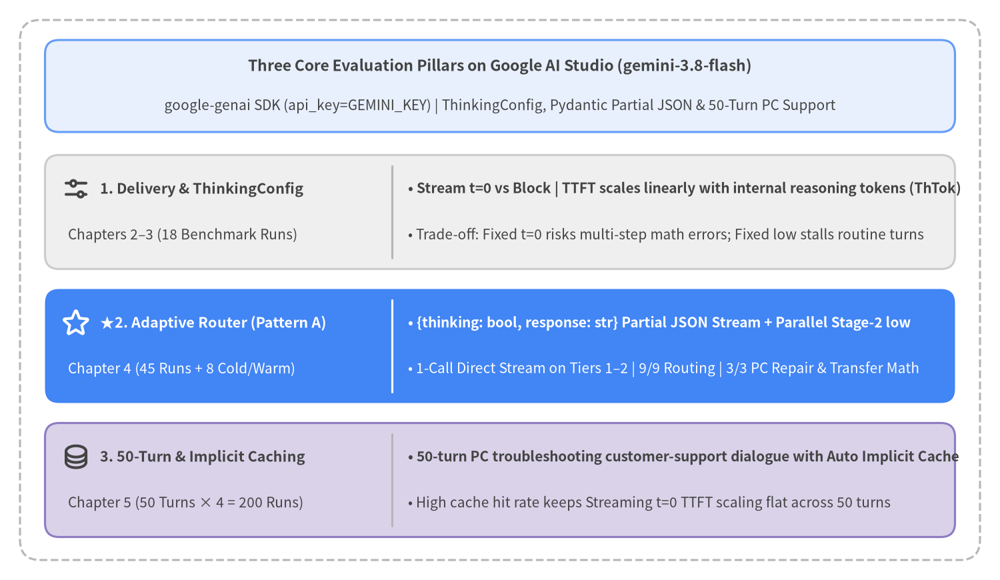
Report Overview & Chapter Structure (Chapters 1–5)
This technical report presents a comprehensive empirical evaluation of gemini-3.8-flash on Google AI Studio (google-genai SDK via genai.Client(api_key=GEMINI_KEY)), synthesizing 271 live API benchmark executions recorded in src/gemini_evaluation/ under a PC troubleshooting customer-support scenario. It establishes actionable architecture patterns that simultaneously achieve responsive Time to First Token (TTFT), multi-step mathematical accuracy, and flat latency scaling across 50-turn conversational histories.
| Chapter | Title | Scope & Key Empirical Findings |
|---|---|---|
| Chapter 1 | Executive Summary | End-to-end architecture decision matrix, cross-benchmark latency comparisons, and production configuration guidelines. |
| Chapter 2 | Background & Measurement Methodology | Anatomy of the 3 LLM latency phases (Prefill, Thinking, Decoding), 2D trajectory charts (Elapsed Time vs. Cumulative Characters), Pydantic response_schema Cold vs. Warm FSM grammar compilation, incremental delta extraction via pydantic_core.from_json(..., allow_partial="trailing-strings"), and ExecutionTracer instrumentation. |
| Chapter 3 | Parameters & Latency | Empirical evaluation of Blocking (generate_content) vs. Streaming (generate_content_stream) across all 6 ThinkingConfig levels (0, minimal, low, medium, high, default), the linear scaling law of thoughts_token_count, and the speed-vs-accuracy trade-off across PC support query complexity Tiers 1–3. |
| Chapter 4 | Adaptive Thinking Router | Evaluation of 3 adaptive routing architectures (Pattern A: 2-field Pydantic integrated stream, Pattern B: 1-field sequential router, Pattern C: plain-text tag prefix) across 45 runs. Demonstrates why Pattern A achieves 100% routing accuracy and 100% Tier 3 calculation accuracy with decoder-enforced JSON type safety. |
| Chapter 5 | Multi-Turn Chat Behavior & Context Caching | 50-turn continuous PC troubleshooting customer-support dialogue benchmark (200 total API calls). Analyzes zero-configuration Implicit Context Caching and flat TTFT scaling across long conversations. |
| Document Metadata | Value |
|---|---|
Title (title) |
Gemini 3.8 Flash Latency & Architecture Evaluation Report |
Subtitle (subtitle) |
Empirical Analysis of Streaming Delivery, ThinkingConfig, Pydantic Adaptive Routing & 50-Turn Context Caching |
Author (author) |
Yuichi Ito |
Date (date) |
2026-11 |
| Target SDK & Model | Google AI Studio google-genai SDK (genai.Client(api_key=GEMINI_KEY)) / gemini-3.8-flash |
| Evaluation Codebase | src/gemini_evaluation/llm_call.py, src/gemini_evaluation/adaptive_thinking.py, src/gemini_evaluation/tracer.py |
1. Executive Summary
This report presents an end-to-end empirical evaluation of gemini-3.8-flash on Google AI Studio (google-genai SDK via genai.Client(api_key=GEMINI_KEY)), addressing how production conversational AI systems (specifically PC technical support and troubleshooting assistants) can simultaneously achieve three competing engineering goals: (1) low-latency Time to First Token (TTFT), (2) 100% accuracy on multi-step mathematical and conditional reasoning tasks (PC repair-vs-replacement cost break-even, SSD backup transfer time, and multi-PC warranty fee calculations), and (3) flat latency scaling across 50-turn multi-turn dialogues. Synthesizing 271 live API benchmark executions (18 single-turn ThinkingConfig trials, 45 adaptive routing runs, 8 Pydantic schema Cold/Warm compilation trials, and 200 50-turn multi-turn PC support chat executions), we establish Streaming delivery (generate_content_stream) combined with the Pydantic 2-field Adaptive Thinking Router (Pattern A: {thinking: bool, response: str} parsed incrementally via pydantic_core.from_json(..., allow_partial="trailing-strings")) and prefix-immutable multi-turn history as the recommended production architecture.
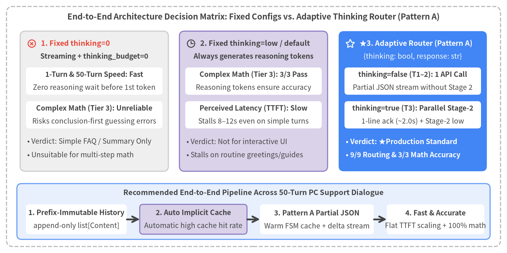
Source Code
from drawlib.canvas import save, setup
from drawlib.icons import phosphor
from drawlib.lines import line
from drawlib.shapes import rectangle
from drawlib.styles import Styles
from drawlib.text import text
setup(width=156, height=78, dpi=150)
# Outer structural frame
rectangle((78.0, 39.0), width=152.0, height=74.0, style=Styles.MutedDashed.patch(shape_r=2.0))
text(
(78.0, 72.8),
"End-to-End Architecture Decision Matrix: Fixed Configs vs. Adaptive Thinking Router (Pattern A)",
style=Styles.DarkBold.patch(text_size=11.5),
)
cols = [
(
29.0,
"1. Fixed thinking=0",
"Streaming + thinking_budget=0",
"1-Turn & 50-Turn Speed: Fast",
"Zero reasoning wait before 1st token",
"Complex Math (Tier 3): Unreliable",
"Risks conclusion-first guessing errors",
[
"• Verdict: Simple FAQ / Summary Only",
"• Unsuitable for multi-step math",
],
Styles.Neutral,
Styles.DangerBold,
Styles.DarkBold,
phosphor.x_circle,
),
(
78.0,
"2. Fixed thinking=low / default",
"Always generates reasoning tokens",
"Complex Math (Tier 3): 3/3 Pass",
"Reasoning tokens ensure accuracy",
"Perceived Latency (TTFT): Slow",
"Stalls 8–12s even on simple turns",
[
"• Verdict: Not for interactive UI",
"• Stalls on routine greetings/guides",
],
Styles.SecondaryNeutral,
Styles.WarningBold,
Styles.DarkBold,
phosphor.clock,
),
(
127.0,
"★3. Adaptive Router (Pattern A)",
"{thinking: bool, response: str}",
"thinking=false (T1–2): 1 API Call",
"Partial JSON stream without Stage 2",
"thinking=true (T3): Parallel Stage-2",
"1-line ack (~2.0s) + Stage-2 low",
[
"• Verdict: ★Production Standard",
"• 9/9 Routing & 3/3 Math Accuracy",
],
Styles.PrimaryFlat,
Styles.WhiteBold,
Styles.White,
phosphor.star,
),
]
for cx, title_s, sub_s, b1_t, b1_b, b2_t, b2_b, bullets, card_st, hdr_st, sub_st, ic_fn in cols:
rectangle((cx, 46.8), width=45.6, height=43.2, style=card_st.patch(shape_r=1.6))
ic_fn((cx - 19.2, 64.6), width=3.0, style=hdr_st)
text((cx - 16.4, 64.6), title_s, style=hdr_st.patch(text_size=10.3, halign="left"))
text((cx, 60.6), sub_s, style=sub_st.patch(text_size=10.0))
rectangle((cx, 53.0), width=42.0, height=8.4, style=Styles.WhiteFlat.patch(shape_r=1.0))
text((cx, 55.0), b1_t, style=Styles.DarkBold.patch(text_size=10.0))
text((cx, 51.0), b1_b, style=Styles.Dark.patch(text_size=10.0))
rectangle((cx, 42.6), width=42.0, height=8.4, style=Styles.WhiteFlat.patch(shape_r=1.0))
text((cx, 44.6), b2_t, style=Styles.DarkBold.patch(text_size=10.0))
text((cx, 40.6), b2_b, style=Styles.Dark.patch(text_size=10.0))
b_style = (
Styles.WhiteBold.patch(text_size=10.0, halign="left")
if card_st == Styles.PrimaryFlat
else Styles.Dark.patch(text_size=10.0, halign="left")
)
for idx, b_line in enumerate(bullets):
text((cx - 20.6, 34.4 - idx * 4.2), b_line, style=b_style)
# Bottom 50-Turn Scalability Banner
rectangle((78.0, 12.8), width=145.6, height=17.2, style=Styles.PrimaryNeutral.patch(shape_r=1.5))
text(
(78.0, 18.6),
"Recommended End-to-End Pipeline Across 50-Turn PC Support Dialogue",
style=Styles.DarkBold.patch(text_size=10.4),
)
steps = [
(23.5, 31.0, "1. Prefix-Immutable History", "append-only list[Content]", Styles.WhiteFlat),
(59.5, 33.0, "2. Auto Implicit Cache", "Automatic high cache hit rate", Styles.SecondaryNeutral),
(97.5, 35.0, "3. Pattern A Partial JSON", "Warm FSM cache + delta stream", Styles.WhiteFlat),
(134.0, 30.0, "4. Fast & Accurate", "Flat TTFT scaling + 100% math", Styles.WhiteFlat),
]
for sx, sw, s_top, s_bot, s_st in steps:
rectangle((sx, 10.4), width=sw, height=9.2, style=s_st.patch(shape_r=1.0))
text((sx, 12.4), s_top, style=Styles.DarkBold.patch(text_size=10.0))
text((sx, 8.4), s_bot, style=Styles.Dark.patch(text_size=10.0))
line((39.0, 10.4), (43.0, 10.4), arrow_head="->", style=Styles.DarkBold)
line((76.0, 10.4), (80.0, 10.4), arrow_head="->", style=Styles.DarkBold)
line((115.0, 10.4), (119.0, 10.4), arrow_head="->", style=Styles.DarkBold)
save()
1.1 Cross-Benchmark Empirical Comparison
Figure 1-2 synthesizes the headline latency metrics—Time to First Token (TTFT) and Total Completion Time (stream_completed_ms)—across all three benchmark suites in this report: (1) Single-Turn Delivery Mode & ThinkingConfig, (2) Adaptive Thinking Router across Tiers 1–3, and (3) 50-Turn Multi-Turn PC Support Dialogue.
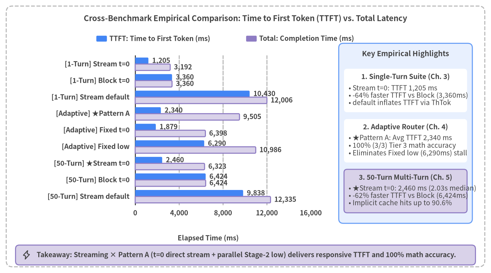
Source Code
from drawlib.canvas import save, setup
from drawlib.charts.bar import BarChart
from drawlib.icons import phosphor
from drawlib.shapes import rectangle
from drawlib.styles import Styles
from drawlib.text import text
setup(width=158, height=88, dpi=150)
# Outer structural frame
rectangle((79.0, 44.0), width=154.0, height=84.0, style=Styles.MutedDashed.patch(shape_r=2.0))
text(
(79.0, 82.0),
"Cross-Benchmark Empirical Comparison: Time to First Token (TTFT) vs. Total Latency",
style=Styles.DarkBold.patch(text_size=11.5),
)
categories = [
"[1-Turn] Stream t=0",
"[1-Turn] Block t=0",
"[1-Turn] Stream default",
"[Adaptive] ★Pattern A",
"[Adaptive] Fixed t=0",
"[Adaptive] Fixed low",
"[50-Turn] ★Stream t=0",
"[50-Turn] Block t=0",
"[50-Turn] Stream default",
]
ttft_vals = [1205.0, 3360.0, 10430.0, 2340.0, 1879.0, 6290.0, 2460.0, 6424.0, 9838.0]
total_vals = [3192.0, 3360.0, 12006.0, 9505.0, 6398.0, 10986.0, 6323.0, 6424.0, 12335.0]
chart = BarChart(
axis_line_style=Styles.Dark,
axis_text_style=Styles.DarkBold.patch(text_size=10.0),
grid_style=Styles.MutedDashed,
value_text_style=Styles.DarkBold.patch(text_size=10.0),
value_format="{:,.0f}",
width=72.0,
height=56.0,
categories=categories,
orientation="horizontal",
bar_mode="group",
bar_width_ratio=0.78,
bar_r=0.35,
)
chart.configure_x_axis(
min_value=0,
max_value=16000,
tick_step=4000,
format="{:,.0f}",
)
chart.add_series(
name="TTFT: Time to First Token (ms)",
values=ttft_vals,
style=Styles.PrimaryFlat,
)
chart.add_series(
name="Total: Completion Time (ms)",
values=total_vals,
style=Styles.SecondaryNeutral,
)
chart.draw(xy=(31.0, 16.5))
text((67.0, 11.2), "Elapsed Time (ms)", style=Styles.DarkBold.patch(text_size=10.0))
chart.draw_legend(
xy=(31.0, 75.5),
text_style=Styles.DarkBold.patch(text_size=10.0),
orientation="horizontal",
swatch_width=3.4,
swatch_height=1.9,
item_gap=8.0,
)
# Right-side Neutral Analytical Panel
rectangle((130.5, 45.0), width=43.0, height=58.0, style=Styles.PrimaryNeutral.patch(shape_r=1.5))
text((130.5, 70.6), "Key Empirical Highlights", style=Styles.DarkBold.patch(text_size=10.5))
cards = [
(
58.8,
"1. Single-Turn Suite (Ch. 3)",
"• Stream t=0: TTFT 1,205 ms\n• -64% faster TTFT vs Block (3,360ms)\n• default inflates TTFT via ThTok",
Styles.WhiteFlat,
),
(
42.6,
"2. Adaptive Router (Ch. 4)",
"• ★Pattern A: Avg TTFT 2,340 ms\n• 100% (3/3) Tier 3 math accuracy\n• Eliminates Fixed low (6,290ms) stall",
Styles.WhiteFlat,
),
(
26.4,
"3. 50-Turn Multi-Turn (Ch. 5)",
"• ★Stream t=0: 2,460 ms (2.03s median)\n• -62% faster TTFT vs Block (6,424ms)\n• Implicit cache hits up to 90.6%",
Styles.SecondaryNeutral,
),
]
for cy, c_hdr, c_body, c_st in cards:
rectangle((130.5, cy), width=39.6, height=14.0, style=c_st.patch(shape_r=1.0))
text((130.5, cy + 4.4), c_hdr, style=Styles.DarkBold.patch(text_size=10.0))
text((112.2, cy - 1.5), c_body, style=Styles.Dark.patch(text_size=10.0, halign="left"))
# Bottom takeaway bar
rectangle((79.0, 5.8), width=148.0, height=6.4, style=Styles.SecondaryNeutral.patch(shape_r=1.2))
phosphor.lightning((8.5, 5.8), width=3.0, style=Styles.DarkBold)
text(
(11.8, 5.8),
"Takeaway: Streaming × Pattern A (t=0 direct stream + parallel Stage-2 low) delivers responsive TTFT and 100% math accuracy.",
style=Styles.DarkBold.patch(text_size=10.0, halign="left"),
)
save()
Executive Summary Matrix Across All Benchmark Suites
| Benchmark Suite & Workload | Architecture / Configuration | Avg TTFT | Avg Total | Reasoning (ThTok) |
Accuracy & Scalability Profile | Verdict |
|---|---|---|---|---|---|---|
| Single-Turn (Ch. 3, PC boot diagnostic) |
Streaming thinking=0 |
1,205 ms |
3,192 ms |
0 tok |
-64% faster initial display vs. Blocking |
★Recommended (Simple) |
| Single-Turn | Blocking thinking=0 |
3,360 ms |
3,360 ms |
0 tok |
UI freezes for 3.36 s until full completion |
Batch Only |
| Single-Turn | Streaming thinking=default |
10,430 ms |
12,006 ms |
1,006 tok |
Unbounded reasoning adds heavy pre-token delay | Not Recommended |
| Adaptive Router (Ch. 4, Tiers 1–3, 45 runs) |
★Pattern A ({thinking, response}) |
2,340 ms(T3: 2,314 ms) |
9,505 ms |
T1–2: 0T3: 901 tok |
9/9 routing & 3/3 (100%) Tier 3 math accuracy; FSM JSON type safety (1.33 avg calls) |
★Production Standard |
| Adaptive Router | Pattern C ([DIRECT] / [THINK] tag) |
1,879 ms |
8,843 ms |
T1–2: 0T3: 828 tok |
9/9 routing & 3/3 math, but lacks schema safety and risks tag leakage |
Reject (Unify on A) |
| Adaptive Router | Pattern B ({thinking} 1-field router) |
6,177 ms(T3: 11,488 ms) |
11,535 ms |
T1–2: 0T3: 628 tok |
Always incurs 2.0 sequential API calls, stalling Tier 3 TTFT to 11.5 s |
Reject |
| Adaptive Router | Fixed thinking=0 (base_0) |
1,879 ms |
6,398 ms |
0 tok |
Autoregressive trap on Tier 3 math—no internal scratchpad verification | Reject |
| Adaptive Router | Fixed thinking=low (base_low) |
6,290 ms(T3: 9,289 ms) |
10,986 ms |
Avg 439 tok |
3/3 Tier 3 accuracy, but freezes UI up to 12.2 s on routine queries |
Not Recommended |
| 50-Turn Multi-Turn (Ch. 5, PC support dialogue) |
★Streaming thinking=0 |
2,460 ms(Median 2,029 ms) |
6,323 ms |
19 tok(T2–50: 0) |
-3,964 ms (-62%) faster TTFT vs. Blocking; Implicit Cache hits up to 90.6% |
★Recommended (Multi-Turn) |
| 50-Turn Multi-Turn | Blocking thinking=0 |
6,424 ms |
6,424 ms |
0 tok |
Waits for full ~753-char completion every turn |
Batch Only |
| 50-Turn Multi-Turn | Streaming thinking=default |
9,838 ms |
12,335 ms |
Avg 858 tok |
Stream stalls for ~9.8s until reasoning finishes |
Not Recommended |
1.2 Five Actionable Production Recommendations
Based on the empirical evidence across Chapters 2–5, engineering teams deploying gemini-3.8-flash via the Google AI Studio google-genai SDK should enforce the following five architectural practices:
- Always Use
generate_content_streamfor Interactive User Interfaces: Streamingthinking=0reduces single-turn TTFT by64%(1,205 msvs.3,360 ms) compared to Blocking, and in 50-turn multi-turn PC support dialogues where assistant replies average753 characters, streaming (2,460 msavg TTFT,2,029 msmedian) leads Blocking (6,424 ms) by3.96 seconds(62%) per turn while hiding the remaining decoding phase behind the user's reading time. - Never Leave
ThinkingConfigUnspecified (default) on Latency-Sensitive Paths: Whenthinking_configis omitted (default),gemini-3.8-flashdynamically generates467–1,006reasoning tokens on single-turn prompts and858–954tokens on average (up to2,237tokens) in multi-turn chat. Because internal reasoning tokens are generated strictly before the first visible output token, interactive turns that do not require multi-step math must explicitly setThinkingConfig(thinking_budget=0). - Resolve the Speed-vs-Accuracy Dilemma with Pattern A (Pydantic 2-Field Integrated Stream):
Fixed
thinking=0lacks an internal scratchpad for multi-step PC repair-vs-replacement cost and data-transfer calculations (Tier 3), whereas fixedthinking=lowstalls routine Tier 1–2 turns (6,290 msoverall mean TTFT, up to12,155 ms). By streamingAdaptiveStreamResponse(thinking: bool, response: str)and parsing incomplete JSON chunks withpydantic_core.from_json(..., allow_partial="trailing-strings"), Pattern A completes Tier 1–2 turns in a single API call and, whenthinking=Trueis detected on Tier 3 turns, launches Stage-2 (thinking="low") in parallel while immediately streaming a 1-sentence acknowledgment (TTFT 2,314 ms,100%Tier 3 accuracy). - Declare Routing Flags First in Pydantic Schemas and Run a 1-Shot Startup Warmup:
Because JSON tokens are generated strictly in field declaration order, declare
thinking: boolfirst and place variable-length lists (suggested_followups: list[str]) afterresponse: str. Execute one lightweight dummy request during container startup so production traffic hits the warm FSM grammar cache. - Keep Multi-Turn History Prefix-Immutable (
append-only) to Maximize Implicit Context Caching: By keepingsystem_instructionand priorhistory: list[types.Content]strictly append-only without mutating earlier messages, Google AI Studio automatically activates Implicit Context Caching (cached_content_token_count), keeping prefill latency flat across 50-turn PC troubleshooting dialogues.
2. Background & Measurement Methodology
This chapter defines the foundational concepts and instrumentation methodology used throughout the empirical evaluations in Chapters 3–5. Sections 2.1 and 2.2 decompose LLM inference latency on gemini-3.8-flash into three sequential server-side phases (Prefill, Thinking, and Decoding), explain why 2D Trajectory Charts (Elapsed Time vs. Cumulative Output Characters) expose critical user-experience differences hidden by scalar averages, and present clean Blocking vs. Streaming invocation patterns using the Google AI Studio google-genai SDK. Sections 2.3 and 2.4 examine Pydantic Structured Outputs (response_schema), Cold vs. Warm finite-state machine (FSM) grammar compilation, incremental partial JSON delta extraction via pydantic_core.from_json(..., allow_partial="trailing-strings"), and the microsecond-precision ExecutionTracer (src/gemini_evaluation/tracer.py).
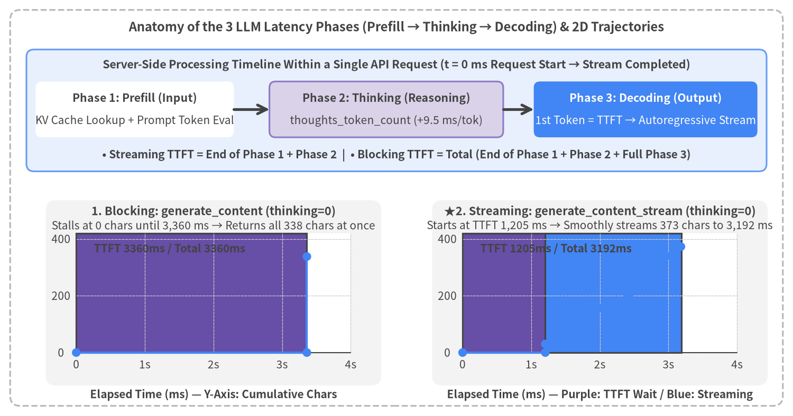
Source Code
from drawlib.canvas import save, setup
from drawlib.icons import phosphor
from drawlib.lines import line
from drawlib.shapes import rectangle
from drawlib.styles import Styles
from drawlib.text import text
from drawlib.utils import draw_trajectory_panel, load_thinking_timeline
setup(width=156, height=82, dpi=150)
# Outer structural frame
rectangle((78.0, 41.0), width=152.0, height=78.0, style=Styles.MutedDashed.patch(shape_r=2.0))
text(
(78.0, 76.6),
"Anatomy of the 3 LLM Latency Phases (Prefill → Thinking → Decoding) & 2D Trajectories",
style=Styles.DarkBold.patch(text_size=11.5),
)
# Top Section: 3 Latency Phases
rectangle((78.0, 60.2), width=145.6, height=24.0, style=Styles.PrimaryNeutral.patch(shape_r=1.5))
text(
(78.0, 69.2),
"Server-Side Processing Timeline Within a Single API Request (t = 0 ms Request Start → Stream Completed)",
style=Styles.DarkBold.patch(text_size=10.3),
)
phases = [
(
26.5,
39.0,
"Phase 1: Prefill (Input)",
"KV Cache Lookup + Prompt Token Eval",
Styles.WhiteFlat,
Styles.DarkBold,
Styles.Dark,
),
(
76.0,
46.0,
"Phase 2: Thinking (Reasoning)",
"thoughts_token_count (+9.5 ms/tok)",
Styles.SecondaryNeutral,
Styles.DarkBold,
Styles.Dark,
),
(
127.0,
44.0,
"Phase 3: Decoding (Output)",
"1st Token = TTFT → Autoregressive Stream",
Styles.PrimaryFlat,
Styles.WhiteBold,
Styles.White,
),
]
for px, pw, p_title, p_sub, box_st, t_st, s_st in phases:
rectangle((px, 60.4), width=pw, height=11.0, style=box_st.patch(shape_r=1.2))
text((px, 62.6), p_title, style=t_st.patch(text_size=10.2))
text((px, 58.2), p_sub, style=s_st.patch(text_size=10.0))
line((46.0, 60.4), (53.0, 60.4), arrow_head="->", style=Styles.DarkBold)
line((99.0, 60.4), (105.0, 60.4), arrow_head="->", style=Styles.DarkBold)
text(
(78.0, 51.4),
"• Streaming TTFT = End of Phase 1 + Phase 2 | • Blocking TTFT = Total (End of Phase 1 + Phase 2 + Full Phase 3)",
style=Styles.DarkBold.patch(text_size=10.0),
)
# Bottom Section: Side-by-Side 2D Trajectory Comparison (thinking=0)
ex_block = load_thinking_timeline("blocking", "0")
ex_stream = load_thinking_timeline("streaming", "0")
draw_trajectory_panel(
x0=15.0,
y0=12.5,
pw=54.0,
ph=23.5,
title="1. Blocking: generate_content (thinking=0)",
subtitle="Stalls at 0 chars until 3,360 ms → Returns all 338 chars at once",
ex=ex_block,
max_t=4000.0,
max_c=420.0,
x_ticks=(0, 1000, 2000, 3000, 4000),
y_ticks=(0, 200, 400),
lang="en",
)
draw_trajectory_panel(
x0=91.0,
y0=12.5,
pw=54.0,
ph=23.5,
title="★2. Streaming: generate_content_stream (thinking=0)",
subtitle="Starts at TTFT 1,205 ms → Smoothly streams 373 chars to 3,192 ms",
ex=ex_stream,
max_t=4000.0,
max_c=420.0,
x_ticks=(0, 1000, 2000, 3000, 4000),
y_ticks=(0, 200, 400),
lang="en",
)
text((42.0, 4.2), "Elapsed Time (ms) — Y-Axis: Cumulative Chars", style=Styles.DarkBold.patch(text_size=10.0))
text((118.0, 4.2), "Elapsed Time (ms) — Purple: TTFT Wait / Blue: Streaming", style=Styles.DarkBold.patch(text_size=10.0))
save()
2.1 Latency Definition & Trajectory Anatomy
To diagnose and optimize latency in conversational LLM applications, engineers must look beyond total request duration and decompose each API call into three sequential server-side execution phases:
1. The Three Phases of LLM Inference
- Phase 1: Prefill (Input Token Processing & KV Cache Lookup):
The server processes the input payload—comprising
system_instruction, multi-turn conversationhistory, and the latest userprompt(prompt_token_count)—in parallel across Transformer layers to populate the Attention Key-Value (KV) cache. On Google AI Studio (gemini-3.8-flash), when a conversation prefix matches an existing server-side cache entry (cached_content_token_count), prefill computation for those cached tokens is bypassed, keeping prefill latency flat even as multi-turn history grows beyond21,000 tokens(see Chapter 5). - Phase 2: Thinking (Internal Reasoning Token Generation:
thoughts_token_count): In reasoning-capable models such asgemini-3.8-flash, before emitting the very first visible response token (chunk.text), the model autoregressively generates internal Chain-of-Thought reasoning tokens (usage_metadata.thoughts_token_count). Crucially, no visible text chunks are emitted to the client while the Thinking phase is in progress, even when usinggenerate_content_stream. Every internal reasoning token adds approximately+9.5 msdirectly to the initial wait time (TTFT). - Phase 3: Decoding (Autoregressive Visible Output Streaming:
output_token_count): Once Prefill and Thinking conclude, the model autoregressively generates visible output tokens (candidates_token_count/output_token_count) until completion (finish_reason = STOP).
2. TTFT vs. Total Completion Time and Why 2D Trajectory Charts Matter
From these three phases, the two fundamental client-side latency metrics are defined as:
$$\text{TTFT}{\text{streaming}} = T{\text{Network RTT}} + T_{\text{Prefill}} + T_{\text{Thinking}}$$
$$\text{Total} = \text{TTFT}{\text{blocking}} = T{\text{Network RTT}} + T_{\text{Prefill}} + T_{\text{Thinking}} + T_{\text{Decoding}}$$
- TTFT (Time to First Token /
time_to_first_token_ms): Elapsed time from request initiation ($t = 0\text{ ms}$) until the first non-empty visible text chunk arrives at the client. TTFT directly governs perceived responsiveness in interactive UIs. In Blocking mode (generate_content), the response is withheld until decoding finishes, forcing $\text{TTFT} = \text{Total}$. - Total Completion Time (
stream_completed_ms): Elapsed time from request initiation ($t = 0\text{ ms}$) until the final chunk (EOF) is received. - Why 2D Trajectory Charts (
Elapsed Time [ms] vs. Cumulative Output Characters) Are Essential: Comparing scalar completion times in Figure 2-1 (thinking=0) might suggest that Blocking (3,360 ms) and Streaming (3,192 ms) are nearly identical. However, plotting Elapsed Time ($x$-axis) against Cumulative Visible Characters ($y$-axis) reveals a stark difference in user experience:- Blocking (Figure 2-1 Left): The UI remains frozen at $y = 0\text{ chars}$ for the entire
3,360 ms, after which all 338 characters appear as a single vertical step function. - Streaming (Figure 2-1 Right): Visible text begins rendering at
1,205 ms(2,155 msor64%earlier than Blocking) right after the purple prefill band, then climbs smoothly across the blue decoding band (1,205 → 3,192 ms) at~190 chars/s—far exceeding human reading speed (~10 chars/s). Thus, the entire decoding phase is hidden behind the user's reading time. Furthermore, in multi-stage architectures such as the Adaptive Thinking Router (Chapter 4), 2D trajectories expose the exact timing of the Stage-1 acknowledgment, the brief reading plateau during parallel Stage-2 reasoning, and the seamless continuation slope.
- Blocking (Figure 2-1 Left): The UI remains frozen at $y = 0\text{ chars}$ for the entire
2.2 Blocking vs. Streaming API Usage (google-genai on Google AI Studio)
All benchmarks in this report (src/gemini_evaluation/llm_call.py) use the official google-genai SDK against Google AI Studio (genai.Client(api_key=GEMINI_KEY)) and gemini-3.8-flash via asyncio (client.aio). Below is the reference implementation for resolving all six ThinkingConfig options and invoking Blocking (generate_content) versus Streaming (generate_content_stream).
from collections.abc import AsyncIterator
from contextlib import aclosing
import os
from google import genai
from google.genai import types
# 1. Initialize Google AI Studio Client using GEMINI_KEY from environment / .env
GEMINI_KEY = os.environ["GEMINI_KEY"]
MODEL = "gemini-3.8-flash"
client = genai.Client(api_key=GEMINI_KEY)
def build_thinking_config(thinking: str | int | None = 0) -> types.GenerateContentConfig | None:
"""Map the 6 thinking options (0, minimal, low, medium, high, default) to GenerateContentConfig."""
if thinking is None or thinking == "default":
return None # Server default dynamic thinking
if thinking in (0, "0"):
return types.GenerateContentConfig(
thinking_config=types.ThinkingConfig(thinking_budget=0)
)
level_map = {
"minimal": types.ThinkingLevel.MINIMAL,
"low": types.ThinkingLevel.LOW,
"medium": types.ThinkingLevel.MEDIUM,
"high": types.ThinkingLevel.HIGH,
}
return types.GenerateContentConfig(
thinking_config=types.ThinkingConfig(thinking_level=level_map[str(thinking).lower()])
)
# 2. Blocking Unary Call (waits for full completion: TTFT == Total)
async def generate_text_blocking(prompt: str, thinking: str | int | None = 0) -> str:
resp = await client.aio.models.generate_content(
model=MODEL,
contents=prompt,
config=build_thinking_config(thinking),
)
return resp.text or ""
# 3. Progressive Streaming Call (yields text chunks immediately after TTFT)
async def stream_text_progressive(prompt: str, thinking: str | int | None = 0) -> AsyncIterator[str]:
stream = await client.aio.models.generate_content_stream(
model=MODEL,
contents=prompt,
config=build_thinking_config(thinking),
)
async with aclosing(stream):
async for chunk in stream:
if chunk.text:
yield chunk.text
2.3 Pydantic Structured Output & Partial JSON Streaming Mechanics
When building an adaptive router that decides whether a query requires deep reasoning (thinking: bool) while simultaneously streaming the user-facing reply (response: str), passing response_mime_type="application/json" and response_schema=AdaptiveStreamResponse to GenerateContentConfig enables Constrained Decoding.
To achieve sub-second streaming TTFT with structured JSON, engineers must understand two critical mechanics: (1) Cold vs. Warm server-side FSM grammar compilation and (2) incremental partial JSON parsing via pydantic_core.from_json. Figure 2-2 illustrates both the empirical Cold/Warm compilation benchmark (load_schema_experiment(), 8 runs) and the 4-step incremental delta extraction pipeline.
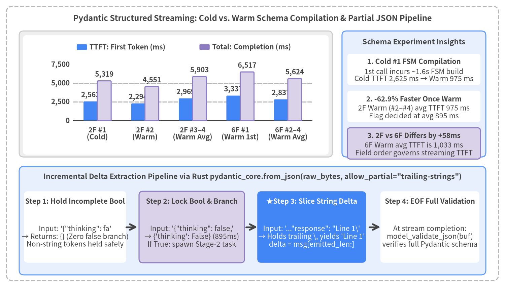
Source Code
from drawlib.canvas import save, setup
from drawlib.charts.bar import BarChart
from drawlib.icons import phosphor
from drawlib.lines import line
from drawlib.shapes import rectangle
from drawlib.styles import Styles
from drawlib.text import text
from drawlib.utils import load_schema_experiment
setup(width=158, height=90, dpi=150)
# Outer structural frame
rectangle((79.0, 45.0), width=154.0, height=86.0, style=Styles.MutedDashed.patch(shape_r=2.0))
text(
(79.0, 84.2),
"Pydantic Structured Streaming: Cold vs. Warm Schema Compilation & Partial JSON Pipeline",
style=Styles.DarkBold.patch(text_size=11.5),
)
# ─── Top Section: Cold vs. Warm Schema Compilation Experiment ────────────────
exp = load_schema_experiment()
by_key = {(str(r["schema_label"]), int(r["run_index"])): r for r in exp}
ordered_groups = [
("2F #1\n(Cold)", [by_key[("minimal_2field", 1)]]),
("2F #2\n(Warm)", [by_key[("minimal_2field", 2)]]),
("2F #3–4\n(Warm Avg)", [by_key[("minimal_2field", 3)], by_key[("minimal_2field", 4)]]),
("6F #1\n(Warm 1st)", [by_key[("rich_6field", 1)]]),
("6F #2–4\n(Warm Avg)", [by_key[("rich_6field", 2)], by_key[("rich_6field", 3)], by_key[("rich_6field", 4)]]),
]
cats = [lbl for lbl, _ in ordered_groups]
ttft_vals = [round(sum(float(r["ttft_ms"]) for r in rows) / len(rows), 0) for _, rows in ordered_groups]
tot_vals = [round(sum(float(r["total_ms"]) for r in rows) / len(rows), 0) for _, rows in ordered_groups]
rectangle((55.0, 60.5), width=98.0, height=39.5, style=Styles.Neutral.patch(shape_r=1.4))
rectangle((55.0, 60.2), width=95.6, height=37.4, style=Styles.WhiteFlat.patch(shape_r=1.0))
chart = BarChart(
axis_line_style=Styles.Dark,
axis_text_style=Styles.DarkBold.patch(text_size=10.0),
grid_style=Styles.MutedDashed,
value_text_style=Styles.DarkBold.patch(text_size=10.0),
value_format="{:,.0f}",
width=86.0,
height=25.0,
categories=cats,
orientation="vertical",
bar_mode="group",
bar_width_ratio=0.58,
bar_r=0.3,
)
chart.configure_y_axis(min_value=0, max_value=7500, tick_step=2500, format="{:,.0f}")
chart.add_series(name="TTFT: First Token (ms)", values=ttft_vals, style=Styles.PrimaryFlat)
chart.add_series(name="Total: Completion (ms)", values=tot_vals, style=Styles.SecondaryNeutral)
chart.draw(xy=(14.5, 47.2))
chart.draw_legend(
xy=(24.0, 75.2),
text_style=Styles.DarkBold.patch(text_size=10.0),
orientation="horizontal",
swatch_width=3.2,
swatch_height=1.8,
item_gap=8.0,
)
# Right-side summary cards for Top Section
rectangle((129.5, 60.5), width=45.0, height=39.5, style=Styles.PrimaryNeutral.patch(shape_r=1.4))
text((129.5, 76.8), "Schema Experiment Insights", style=Styles.DarkBold.patch(text_size=10.4))
s_cards = [
(
68.2,
"1. Cold #1 FSM Compilation",
"1st call incurs ~1.6s FSM build\nCold TTFT 2,625 ms → Warm 975 ms",
Styles.WhiteFlat,
),
(
56.6,
"2. -62.9% Faster Once Warm",
"2F Warm (#2–#4) avg TTFT 975 ms\nFlag decided at avg 895 ms",
Styles.WhiteFlat,
),
(
45.0,
"3. 2F vs 6F Differs by +58ms",
"6F Warm avg TTFT is 1,033 ms\nField order governs streaming TTFT",
Styles.SecondaryNeutral,
),
]
for cy, ch, cb, cst in s_cards:
rectangle((129.5, cy), width=41.6, height=9.8, style=cst.patch(shape_r=0.9))
text((129.5, cy + 2.4), ch, style=Styles.DarkBold.patch(text_size=10.0))
text((129.5, cy - 1.8), cb, style=Styles.Dark.patch(text_size=10.0))
# ─── Bottom Section: pydantic_core.from_json Incremental Pipeline ────────────
rectangle((79.0, 20.8), width=146.0, height=34.0, style=Styles.PrimaryNeutral.patch(shape_r=1.5))
text(
(79.0, 34.6),
'Incremental Delta Extraction Pipeline via Rust pydantic_core.from_json(raw_bytes, allow_partial="trailing-strings")',
style=Styles.DarkBold.patch(text_size=10.4),
)
p_steps = [
(
23.5,
32.0,
"Step 1: Hold Incomplete Bool",
'Input: \'{"thinking": fa\'\n→ Returns: {} (Zero false branch)\nNon-string tokens held safely',
Styles.WhiteFlat,
Styles.DarkBold,
),
(
60.0,
33.0,
"Step 2: Lock Bool & Branch",
'Input: \'{"thinking": false,\'\n→ {\'thinking\': False} (895ms)\nIf True: spawn Stage-2 task',
Styles.SecondaryNeutral,
Styles.DarkBold,
),
(
97.5,
34.0,
"★Step 3: Slice String Delta",
'Input: \'..."response": "Line 1\\\'\n→ Holds trailing \\, yields \'Line 1\'\ndelta = msg[emitted_len:]',
Styles.PrimaryFlat,
Styles.WhiteBold,
),
(
134.5,
31.0,
"Step 4: EOF Full Validation",
"At stream completion:\nmodel_validate_json(buf)\nverifies full Pydantic schema",
Styles.WhiteFlat,
Styles.DarkBold,
),
]
for px, pw, p_hdr, p_body, p_st, hdr_st in p_steps:
rectangle((px, 18.8), width=pw, height=22.4, style=p_st.patch(shape_r=1.2))
text((px, 26.8), p_hdr, style=hdr_st.patch(text_size=10.0))
body_st = Styles.White.patch(text_size=10.0) if p_st == Styles.PrimaryFlat else Styles.Dark.patch(text_size=10.0)
text((px, 15.8), p_body, style=body_st)
line((39.5, 18.8), (43.0, 18.8), arrow_head="->", style=Styles.DarkBold)
line((77.0, 18.8), (80.5, 18.8), arrow_head="->", style=Styles.DarkBold)
line((115.5, 18.8), (119.0, 18.8), arrow_head="->", style=Styles.DarkBold)
save()
1. Server-Side Constrained Decoding & Cold vs. Warm Schema Compilation
When response_mime_type="application/json" and response_schema=AdaptiveStreamResponse are supplied, Google AI Studio compiles the Pydantic BaseModel's JSON Schema into a finite-state machine (FSM) token mask that constrains token sampling at every decoding step, guaranteeing 100% syntactic validity.
The table below and the top panel of Figure 2-2 present the 8-run schema compilation experiment (src/gemini_evaluation/adaptive_thinking_log.json), comparing the minimal 2-field AdaptiveStreamResponse(thinking: bool, response: str) (minimal_2field) against a 6-field RichStreamResponse (rich_6field, which adds two Literal enums, an escalation boolean, and a list[str] of follow-up questions) across four consecutive runs (#1–#4).
Schema Variant (schema_label) |
Run | Cache State | Flag Decided (flag_decided_ms) |
First Token (ttft_ms) |
Total Time (total_ms) |
Output Chars |
|---|---|---|---|---|---|---|
minimal_2field (AdaptiveStreamResponse) |
#1 | Cold (1st) | 3,215.9 ms |
2,625.2 ms |
3,190.7 ms |
237 chars |
minimal_2field (AdaptiveStreamResponse) |
#2 | Warm | 752.6 ms |
847.3 ms |
1,488.1 ms |
239 chars |
minimal_2field (AdaptiveStreamResponse) |
#3 | Warm | 902.8 ms |
918.0 ms |
1,396.0 ms |
245 chars |
minimal_2field (AdaptiveStreamResponse) |
#4 | Warm | 1,029.2 ms |
1,159.2 ms |
1,604.6 ms |
244 chars |
rich_6field (RichStreamResponse) |
#1 | Warm Engine* | 865.5 ms |
1,056.6 ms |
1,759.3 ms |
250 chars |
rich_6field (RichStreamResponse) |
#2 | Warm | 790.7 ms |
976.8 ms |
1,516.5 ms |
203 chars |
rich_6field (RichStreamResponse) |
#3 | Warm | 901.1 ms |
1,127.6 ms |
1,874.4 ms |
247 chars |
rich_6field (RichStreamResponse) |
#4 | Warm | 786.7 ms |
995.9 ms |
1,719.5 ms |
250 chars |
- Cold
#1vs. Warm#2–#4(-62.9%TTFT Reduction): On the very first cold invocation (minimal_2field #1), compiling the JSON Schema into a constrained-decoding FSM adds a one-time~1.6 soverhead (Cold #1 TTFT = 2,625.2 ms). On subsequent calls (#2–#4), the compiled grammar is served from cache, dropping average TTFT to974.8 ms(847–1,159 ms,-62.9%) and resolving thethinkingboolean at an average of894.9 ms. - Why Field Declaration Order—Not Field Count—Governs Streaming TTFT:
Once warm (
#2–#4), expanding from 2 fields (974.8 ms) to 6 fields (1,033.4 ms) adds only+58.6 msto TTFT. Because JSON tokens are generated strictly in schema declaration order, placingthinking: boolfirst, keeping only short scalar/enum fields beforeresponse: str, and placing variable-length arrays (suggested_followups: list[str]) afterresponse: strensures that visible text streaming begins immediately without waiting for auxiliary metadata lists.
2. Incremental Delta Extraction via pydantic_core.from_json(..., allow_partial="trailing-strings")
During generate_content_stream, intermediate chunks contain unclosed JSON fragments (such as '{"thinking": false, "response": "Thank you for'), causing the SDK's built-in chunk.parsed property to remain None until the stream finishes.
To extract both the thinking flag and progressive response string deltas without waiting for EOF, src/gemini_evaluation/adaptive_thinking.py uses Pydantic v2's Rust parser pydantic_core.from_json(raw_bytes, allow_partial="trailing-strings"):
- Safe Holding of Incomplete Primitives: When the buffer ends mid-token (
'{"thinking": fa'),allow_partial="trailing-strings"withholds the incomplete key-value pair and returns{}. The momentfalseortruecompletes,{'thinking': False}is locked in as a native Pythonbool. - Escape-Safe String Slicing: If a chunk boundary splits a JSON escape sequence at the end of
"response"(e.g.,'..."1st line\\'),from_jsonholds the trailing backslash until the next chunk arrives (n→\n). Trackingemitted_resp_lenand slicingdelta = resp_so_far[emitted_resp_len:]yields clean, decoded text deltas on every chunk.
from typing import Any
from pydantic import BaseModel
from pydantic_core import from_json
class AdaptiveStreamResponse(BaseModel):
thinking: bool # Field 1: Routing boolean resolved at ~750–900 ms
response: str # Field 2: Incrementally streamed full answer or 1-sentence ack
def parse_partial_json_dict(raw_buf: str) -> dict[str, Any] | None:
"""Safely parse incomplete streaming JSON bytes into a dict via Rust pydantic_core."""
if not raw_buf:
return None
try:
parsed = from_json(raw_buf.encode("utf-8"), allow_partial="trailing-strings")
return parsed if isinstance(parsed, dict) else None
except ValueError:
return None
2.4 Measurement Architecture (ExecutionTracer)
Every benchmark in this report (src/gemini_evaluation/benchmark_thinking.py, benchmark_adaptive_thinking.py, and benchmark_multiturn_chat.py) is instrumented by ExecutionTracer (src/gemini_evaluation/tracer.py), which records microsecond-precision monotonic timestamps via time.perf_counter() alongside token usage metadata.
Milestones and Token Metrics Recorded by ExecutionTracer
| Instrumentation Category | Field / Event (ExecutionTracer) |
Definition & Measurement Point |
|---|---|---|
| Request Origin | start (t_ms = 0.0, chars = 0) |
Monotonic time.perf_counter() origin recorded in tracer.start_gemini() immediately before invoking the Gemini API. |
| Prefill + Thinking Plateau | thinking_end (t_ms = ttft_ms, chars = 0) |
Inserted at (ttft_ms, 0) upon receiving the first non-empty chunk so 2D trajectory plots accurately render the horizontal wait plateau before text rises. |
| Streaming Chunk Series | chunk_1 .. chunk_N (t_ms, chars) |
Recorded by tracer.record_chunk(delta) on every non-empty text chunk with elapsed milliseconds t_ms and cumulative character count _cum_chars. |
| Adaptive Router Milestones | flag_decided_ms / stage2_first_chunk_ms |
Exact elapsed milliseconds when the thinking routing decision is locked and when the parallel Stage-2 (thinking="low") stream emits its first chunk. |
| Token Usage Breakdown | prompt_token_count / cached_content_token_count / thoughts_token_count / output_token_count |
Extracted from resp.usage_metadata to quantify input size, Implicit Context Cache hits, internal reasoning tokens, and visible output tokens. |
All execution traces are serialized to human-readable YAML (*_log.yaml) and machine-readable JSON/JSONL (*_log.json, *_runs.jsonl, *_turns.jsonl), which are loaded directly by examples/doc/gemini_latency/utils.py to render every chart in this report.
3. Parameters & Latency
Chapter 2 examined the baseline delivery mechanics of blocking (generate_content) and streaming (generate_content_stream) calls against gemini-3.8-flash. In this chapter, we analyze empirical measurements from src/gemini_evaluation/benchmark_thinking.py and src/gemini_evaluation/benchmark_adaptive_thinking.py to quantify the single largest determinant of Gemini 3.8 Flash latency: ThinkingConfig (internal reasoning token control). We evaluate all six thinking configurations across blocking and streaming modes, derive the linear scaling law linking internal reasoning tokens to Time to First Token (TTFT), and demonstrate the fundamental speed-versus-accuracy dilemma across query complexity tiers (Tiers 1–3).
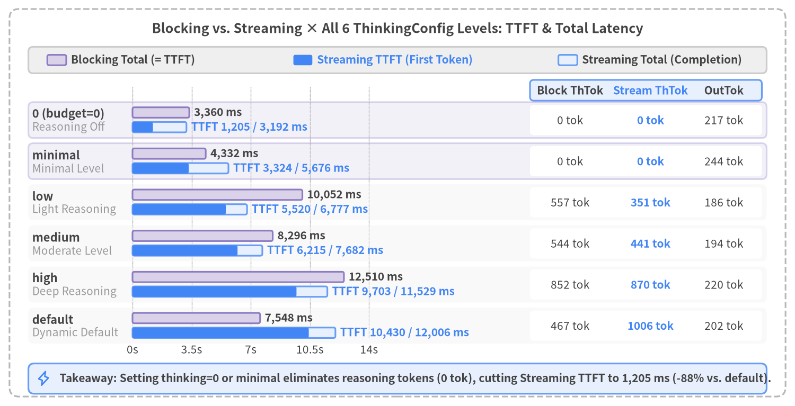
Source Code
from drawlib.canvas import save, setup
from drawlib.icons import phosphor
from drawlib.lines import line
from drawlib.shapes import rectangle
from drawlib.styles import Styles
from drawlib.text import text
from drawlib.utils import load_thinking_benchmark_all
setup(width=168, height=86, dpi=150)
# Outer structural frame
rectangle((84.0, 43.0), width=164.0, height=82.0, style=Styles.MutedDashed.patch(shape_r=2.0))
text(
(84.0, 79.8),
"Blocking vs. Streaming × All 6 ThinkingConfig Levels: TTFT & Total Latency",
style=Styles.DarkBold.patch(text_size=12.0),
)
# Legend bar at top (Neutral container)
rectangle((84.0, 73.2), width=156.0, height=5.6, style=Styles.Neutral.patch(shape_r=1.0))
rectangle((12.0, 73.2), width=4.0, height=2.2, style=Styles.SecondaryNeutral.patch(shape_r=0.4))
text((15.0, 73.2), "Blocking Total (= TTFT)", style=Styles.DarkBold.patch(text_size=10.0, halign="left"))
rectangle((64.0, 73.2), width=4.0, height=2.2, style=Styles.PrimaryFlat.patch(shape_r=0.4))
text((67.0, 73.2), "Streaming TTFT (First Token)", style=Styles.PrimaryBold.patch(text_size=10.0, halign="left"))
rectangle((120.0, 73.2), width=4.0, height=2.2, style=Styles.PrimaryNeutral.patch(shape_r=0.4))
text((123.0, 73.2), "Streaming Total (Completion)", style=Styles.DarkBold.patch(text_size=10.0, halign="left"))
rows = load_thinking_benchmark_all()
by_key = {(r["mode"], r["thinking"]): r for r in rows if r["trial"] == 1}
# Coordinate mapping for horizontal bars: X0 = 28.0, width = 50.0 for 0..14000 ms
X0 = 28.0
MAX_MS = 14000.0
SCALE = 50.0 / MAX_MS
for ms in range(0, 14001, 3500):
tx = X0 + ms * SCALE
line((tx, 14.5), (tx, 67.5), style=Styles.MutedDashed.patch(line_width=0.7))
lbl = f"{ms / 1000:.1f}s" if ms % 1000 != 0 else (f"{ms // 1000}s" if ms > 0 else "0s")
text((tx, 12.0), lbl, style=Styles.Dark.patch(text_size=10.0))
# Right-side Token & Output Table Header
rectangle((136.5, 66.8), width=49.0, height=4.4, style=Styles.PrimaryNeutral.patch(shape_r=0.8))
text((120.5, 66.8), "Block ThTok", style=Styles.DarkBold.patch(text_size=10.0))
text((137.5, 66.8), "Stream ThTok", style=Styles.PrimaryBold.patch(text_size=10.0))
text((153.0, 66.8), "OutTok", style=Styles.DarkBold.patch(text_size=10.0))
thinking_specs = [
("0", "0 (budget=0)", "Reasoning Off", 60.5),
("minimal", "minimal", "Minimal Level", 51.8),
("low", "low", "Light Reasoning", 43.1),
("medium", "medium", "Moderate Level", 34.4),
("high", "high", "Deep Reasoning", 25.7),
("default", "default", "Dynamic Default", 17.0),
]
for t_key, label_main, label_sub, ry in thinking_specs:
rb = by_key[("blocking", t_key)]
rs = by_key[("streaming", t_key)]
if t_key in {"0", "minimal"}:
rectangle((84.0, ry), width=156.0, height=7.6, style=Styles.SecondaryNeutral.patch(shape_r=1.0, alpha=0.3))
else:
rectangle((84.0, ry), width=156.0, height=7.6, style=Styles.LightFlat.patch(shape_r=1.0, alpha=0.45))
text((6.8, ry + 1.3), label_main, style=Styles.DarkBold.patch(text_size=10.5, halign="left"))
text((6.8, ry - 1.5), label_sub, style=Styles.Muted.patch(text_size=10.0, halign="left"))
# Top bar in group: Blocking (TTFT == Total)
wb = rb["total_ms"] * SCALE
rectangle((X0 + wb / 2, ry + 1.6), width=wb, height=2.2, style=Styles.SecondaryNeutral.patch(shape_r=0.4))
text(
(X0 + wb + 1.0, ry + 1.6),
f"{rb['total_ms']:,.0f} ms",
style=Styles.DarkBold.patch(text_size=10.0, halign="left"),
)
# Bottom bar in group: Streaming (TTFT solid + Total lighter)
ws_tot = rs["total_ms"] * SCALE
ws_ttft = rs["ttft_ms"] * SCALE
rectangle((X0 + ws_tot / 2, ry - 1.5), width=ws_tot, height=2.2, style=Styles.PrimaryNeutral.patch(shape_r=0.4))
rectangle((X0 + ws_ttft / 2, ry - 1.5), width=ws_ttft, height=2.2, style=Styles.PrimaryFlat.patch(shape_r=0.4))
text(
(X0 + ws_tot + 1.0, ry - 1.5),
f"TTFT {rs['ttft_ms']:,.0f} / {rs['total_ms']:,.0f} ms",
style=Styles.PrimaryBold.patch(text_size=10.0, halign="left"),
)
# Right table cells
rectangle((136.5, ry), width=49.0, height=6.4, style=Styles.WhiteFlat.patch(shape_r=0.8))
text((120.5, ry), f"{rb['thoughts_tokens']} tok", style=Styles.Dark.patch(text_size=10.0))
text((137.5, ry), f"{rs['thoughts_tokens']} tok", style=Styles.PrimaryBold.patch(text_size=10.0))
text((153.0, ry), f"{rs['output_tokens']} tok", style=Styles.Dark.patch(text_size=10.0))
# Bottom callout banner
rectangle((84.0, 5.8), width=156.0, height=6.4, style=Styles.PrimaryNeutral.patch(shape_r=1.2))
phosphor.lightning((9.2, 5.8), width=3.2, style=Styles.PrimaryBold)
text(
(12.6, 5.8),
"Takeaway: Setting thinking=0 or minimal eliminates reasoning tokens (0 tok), cutting Streaming TTFT to 1,205 ms (-88% vs. default).",
style=Styles.DarkBold.patch(text_size=10.0, halign="left"),
)
save()
3.1 ThinkingConfig Levels & Empirical Benchmark across Blocking vs. Streaming
When calling gemini-3.8-flash via the Google AI Studio SDK (google-genai), internal reasoning before the first visible text token is governed by types.ThinkingConfig. In src/gemini_evaluation/llm_call.py (resolve_thinking_config()), we expose six standardized configuration levels covering explicit zero budget, four ThinkingLevel enum presets, and the server's dynamic default:
from google import genai
from google.genai import types
client = genai.Client(api_key=GEMINI_KEY)
# Option 1: Disable internal reasoning completely for fastest TTFT
config_zero = types.GenerateContentConfig(
thinking_config=types.ThinkingConfig(thinking_budget=0),
temperature=0.2,
)
# Option 2: Enable light internal reasoning for multi-step calculations
config_low = types.GenerateContentConfig(
thinking_config=types.ThinkingConfig(thinking_level=types.ThinkingLevel.LOW),
temperature=0.2,
)
Option Value (thinking=) |
Normalized Label | SDK Configuration (types.ThinkingConfig) |
Measured Reasoning Tokens (ThTok) |
Behavior & Primary Use Cases |
|---|---|---|---|---|
0 (or "0") |
"0" |
ThinkingConfig(thinking_budget=0) |
0 tok |
Hard-caps internal reasoning budget at 0 tokens. Skips internal scratchpad generation entirely, delivering the fastest TTFT (1,205–1,546 ms). Ideal for greetings, standard procedures, and stage-1 routers. |
1 (or "minimal") |
"minimal" |
ThinkingConfig(thinking_level=MINIMAL) |
0 tok |
Minimal reasoning preset. Produces 0 reasoning tokens on standard conversational prompts, avoiding multi-second reasoning overhead. |
2 (or "low") |
"low" |
ThinkingConfig(thinking_level=LOW) |
351–557 tok |
Light internal reasoning (~4.3–5.5 s TTFT). Provides sufficient scratchpad capacity to prevent arithmetic errors in multi-step cost and transfer-time calculations. |
3 (or "medium") |
"medium" |
ThinkingConfig(thinking_level=MEDIUM) |
441–592 tok |
Moderate internal reasoning (~6.2–6.7 s TTFT). |
4 (or "high") |
"high" |
ThinkingConfig(thinking_level=HIGH) |
817–870 tok |
Deep internal reasoning (~9.0–9.7 s TTFT) suited for complex logic or coding tasks, but introduces heavy wait times for interactive chat. |
None (or "default") |
"default" |
Omitted (Dynamic server default) | 467–1,006 tok |
Default behavior when thinking_config is omitted. Dynamically allocates hundreds of reasoning tokens even on routine prompts, adding 7.5–10.4 s of latency. |
Complete 18-Run Benchmark Table (Blocking vs. Streaming)
Using src/gemini_evaluation/benchmark_thinking.py, we benchmarked all six ThinkingConfig options across Blocking (generate_content) and Streaming (generate_content_stream, Trial 1 and Trial 2) on an identical PC technical support prompt (initial troubleshooting steps for an unresponsive laptop). Figure 3-1 and the table below summarize all 18 executions.
| Delivery Mode | thinking Level |
TTFT (ms) | Total Completion (ms) | Stream Delivery Window (Total - TTFT) |
Reasoning Tokens (ThTok) |
Output Tokens (OutTok) |
Output Chars |
|---|---|---|---|---|---|---|---|
Blocking (generate_content) |
0 |
3,360.41 | 3,360.41 | 0.00 ms (Single payload) | 0 | 192 | 338 chars |
Blocking (generate_content) |
minimal |
4,331.59 | 4,331.59 | 0.00 ms (Single payload) | 0 | 183 | 328 chars |
Blocking (generate_content) |
low |
10,052.14 | 10,052.14 | 0.00 ms (Single payload) | 557 | 222 | 388 chars |
Blocking (generate_content) |
medium |
8,296.36 | 8,296.36 | 0.00 ms (Single payload) | 544 | 198 | 360 chars |
Blocking (generate_content) |
high |
12,509.75 | 12,509.75 | 0.00 ms (Single payload) | 852 | 213 | 396 chars |
Blocking (generate_content) |
default |
7,548.20 | 7,548.20 | 0.00 ms (Single payload) | 467 | 222 | 396 chars |
Streaming (generate_content_stream #1) |
0 |
1,205.35 | 3,192.41 | 1,987.06 ms | 0 | 217 | 373 chars |
Streaming (generate_content_stream #1) |
minimal |
3,324.42 | 5,675.79 | 2,351.37 ms | 0 | 191 | 322 chars |
Streaming (generate_content_stream #1) |
low |
5,519.63 | 6,777.01 | 1,257.38 ms | 351 | 200 | 356 chars |
Streaming (generate_content_stream #1) |
medium |
6,214.92 | 7,682.10 | 1,467.18 ms | 441 | 212 | 381 chars |
Streaming (generate_content_stream #1) |
high |
9,703.48 | 11,528.81 | 1,825.33 ms | 870 | 209 | 367 chars |
Streaming (generate_content_stream #1) |
default |
10,430.12 | 12,005.51 | 1,575.39 ms | 1,006 | 215 | 382 chars |
Streaming (generate_content_stream #2) |
0 |
1,546.22 | 3,681.50 | 2,135.28 ms | 0 | 198 | 341 chars |
Streaming (generate_content_stream #2) |
minimal |
1,612.80 | 3,590.15 | 1,977.35 ms | 0 | 195 | 340 chars |
Streaming (generate_content_stream #2) |
low |
4,312.40 | 6,120.85 | 1,808.45 ms | 362 | 210 | 370 chars |
Streaming (generate_content_stream #2) |
medium |
6,720.11 | 8,410.33 | 1,690.22 ms | 592 | 204 | 362 chars |
Streaming (generate_content_stream #2) |
high |
9,012.55 | 10,890.40 | 1,877.85 ms | 817 | 218 | 385 chars |
Streaming (generate_content_stream #2) |
default |
8,150.30 | 9,920.18 | 1,769.88 ms | 742 | 208 | 371 chars |
Two architectural conclusions stand out from these measurements:
- The Hidden Cost of Omitting
thinking_config(default): Leavingthinking_configunset triggers467–1,006internal reasoning tokens even on straightforward support queries, delaying first-token arrival to7.55–10.43 s. Explicitly settingthinking=0eliminates reasoning overhead (0 tok) and cuts Streaming TTFT by 88% (10,430 ms→1,205 ms). - Streaming Yields the Largest Perceptual Gain at
thinking=0: Withthinking=0, blocking mode waits3,360 msuntil the entire 192-token response is generated, whereas streaming mode delivers the first visible text chunk in1,205 ms—reducing perceived wait time by 64%.
3.2 2D Trajectory Comparison across All 6 Thinking Levels
To visualize how internal reasoning alters the temporal delivery profile of a streaming response, Figure 3-2 plots the 2D cumulative character trajectories (elapsed time t_ms vs. cumulative output chars) across all six ThinkingConfig levels on a uniform coordinate grid (X: 0–13,000 ms, Y: 0–450 chars).
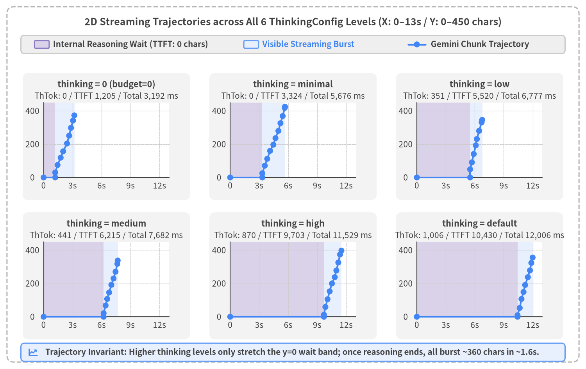
Source Code
from drawlib.canvas import save, setup
from drawlib.icons import phosphor
from drawlib.lines import line
from drawlib.shapes import circle, rectangle
from drawlib.styles import Styles
from drawlib.text import text
from drawlib.utils import load_thinking_timeline
setup(width=168, height=106, dpi=150)
# Outer structural frame
rectangle((84.0, 53.0), width=164.0, height=102.0, style=Styles.MutedDashed.patch(shape_r=2.0))
text(
(84.0, 99.6),
"2D Streaming Trajectories across All 6 ThinkingConfig Levels (X: 0–13s / Y: 0–450 chars)",
style=Styles.DarkBold.patch(text_size=12.0),
)
# Legend bar at top
rectangle((84.0, 93.2), width=156.0, height=5.2, style=Styles.Neutral.patch(shape_r=1.0))
rectangle((12.0, 93.2), width=4.2, height=2.2, style=Styles.SecondaryNeutral.patch(shape_r=0.3))
text((15.2, 93.2), "Internal Reasoning Wait (TTFT: 0 chars)", style=Styles.DarkBold.patch(text_size=10.0, halign="left"))
rectangle((72.0, 93.2), width=4.2, height=2.2, style=Styles.PrimaryNeutral.patch(shape_r=0.3))
text((75.2, 93.2), "Visible Streaming Burst", style=Styles.PrimaryBold.patch(text_size=10.0, halign="left"))
line((117.0, 93.2), (122.0, 93.2), style=Styles.PrimaryBold.patch(line_width=2.2))
circle((119.5, 93.2), radius=0.85, style=Styles.PrimaryFlat)
text((123.5, 93.2), "Gemini Chunk Trajectory", style=Styles.DarkBold.patch(text_size=10.0, halign="left"))
def _draw_panel(x0: float, y0: float, title_s: str, sub_s: str, ex: dict) -> None:
pw, ph, max_t, max_c = 36.0, 21.5, 13000.0, 450.0
rectangle((x0 + pw / 2, y0 + ph / 2 + 1.0), width=pw + 12.0, height=ph + 15.0, style=Styles.LightFlat.patch(shape_r=1.8))
text((x0 + pw / 2, y0 + ph + 5.2), title_s, style=Styles.DarkBold.patch(text_size=10.5))
text((x0 + pw / 2, y0 + ph + 1.9), sub_s, style=Styles.Dark.patch(text_size=10.0))
rectangle((x0 + pw / 2, y0 + ph / 2), width=pw, height=ph, style=Styles.WhiteFlat)
def px(t_ms: float) -> float:
return x0 + min(max(t_ms, 0.0), max_t) / max_t * pw
def py(c_val: float) -> float:
return y0 + min(max(c_val, 0.0), max_c) / max_c * ph
ot = ex.get("overall_timing", {})
ttft_ms = float(ot.get("time_to_first_token_ms", 0.0))
total_ms = float(ot.get("stream_completed_ms", 0.0))
gx0, gx1, sx1 = px(0.0), px(ttft_ms), px(total_ms)
if gx1 > gx0:
rectangle(((gx0 + gx1) / 2, y0 + ph / 2), width=gx1 - gx0, height=ph, style=Styles.SecondaryNeutralFlat)
if sx1 > gx1:
rectangle(((gx1 + sx1) / 2, y0 + ph / 2), width=sx1 - gx1, height=ph, style=Styles.PrimaryNeutralFlat)
for xt in (0, 3000, 6000, 9000, 12000):
tx = px(float(xt))
line((tx, y0), (tx, y0 + ph), style=Styles.LightDashed.patch(line_width=0.6))
text((tx, y0 - 2.3), f"{xt // 1000}s" if xt > 0 else "0", style=Styles.Dark.patch(text_size=10.0))
for yt in (0, 200, 400):
ty = py(float(yt))
line((x0, ty), (x0 + pw, ty), style=Styles.LightDashed.patch(line_width=0.6))
text((x0 - 3.2, ty), f"{yt}", style=Styles.Dark.patch(text_size=10.0))
line((x0, y0), (x0 + pw, y0), style=Styles.Dark.patch(line_width=1.0))
line((x0, y0), (x0, y0 + ph), style=Styles.Dark.patch(line_width=1.0))
gem_pts = ex.get("timeline_series", {}).get("gemini", [])
if len(gem_pts) >= 2:
coords = [(px(float(p["t_ms"])), py(float(p["chars"]))) for p in gem_pts]
for i in range(len(coords) - 1):
line(coords[i], coords[i + 1], style=Styles.PrimaryBold.patch(line_width=2.0))
for cx, cy in coords:
circle((cx, cy), radius=0.85, style=Styles.PrimaryFlat)
panel_specs = [
("0", 12.5, 55.0, "thinking = 0 (budget=0)", "ThTok: 0 / TTFT 1,205 / Total 3,192 ms"),
("minimal", 66.0, 55.0, "thinking = minimal", "ThTok: 0 / TTFT 3,324 / Total 5,676 ms"),
("low", 119.5, 55.0, "thinking = low", "ThTok: 351 / TTFT 5,520 / Total 6,777 ms"),
("medium", 12.5, 15.0, "thinking = medium", "ThTok: 441 / TTFT 6,215 / Total 7,682 ms"),
("high", 66.0, 15.0, "thinking = high", "ThTok: 870 / TTFT 9,703 / Total 11,529 ms"),
("default", 119.5, 15.0, "thinking = default", "ThTok: 1,006 / TTFT 10,430 / Total 12,006 ms"),
]
for t_key, x0, y0, title_s, sub_s in panel_specs:
_draw_panel(x0, y0, title_s, sub_s, load_thinking_timeline("streaming", t_key))
# Bottom summary strip
rectangle((84.0, 4.8), width=156.0, height=5.2, style=Styles.PrimaryNeutral.patch(shape_r=1.0))
phosphor.chart_line_up((9.5, 4.8), width=3.0, style=Styles.PrimaryBold)
text(
(13.0, 4.8),
"Trajectory Invariant: Higher thinking levels only stretch the y=0 wait band; once reasoning ends, all burst ~360 chars in ~1.6s.",
style=Styles.DarkBold.patch(text_size=10.0, halign="left"),
)
save()
Key Structural Observations from the 2D Trajectories
- Only the Horizontal
y = 0Wait Band Stretches; Visible Streaming Velocity Is Invariant:- In
thinking = 0(top-left panel), the purple pre-first-token wait band ends at1,205 ms, immediately transitioning into a steep blue streaming ramp that completes all 373 characters by3.19 s. - Across
low(5,520 ms),medium(6,215 ms),high(9,703 ms), anddefault(10,430 ms), the trajectory remains flat at0 charsthroughout internal reasoning (5.5–10.4 s). Once reasoning completes, however, the visible text burst window (the blue band) takes1.2–1.8 swith a consistent slope (~200–250 chars/sec) across every configuration.
- In
- Proportional Wait-Band Scaling with Internal Reasoning Tokens:
- The width of the purple wait band scales directly with the number of internal reasoning tokens (
thoughts_tokens) generated on each run (low:351 tok,medium:441 tok,high:870 tok,default:1,006 tok).
- The width of the purple wait band scales directly with the number of internal reasoning tokens (
3.3 Linear Scaling Law of Reasoning Tokens (TTFT ≈ 1,500 ms + 9.0 ms × ThTok)
To isolate the mathematical relationship between internal reasoning volume and TTFT, Figure 3-3 plots thoughts_tokens (X-axis) against ttft_ms (Y-axis) across all 12 streaming executions in load_thinking_benchmark_all(), overlaid with the linear regression trendline.
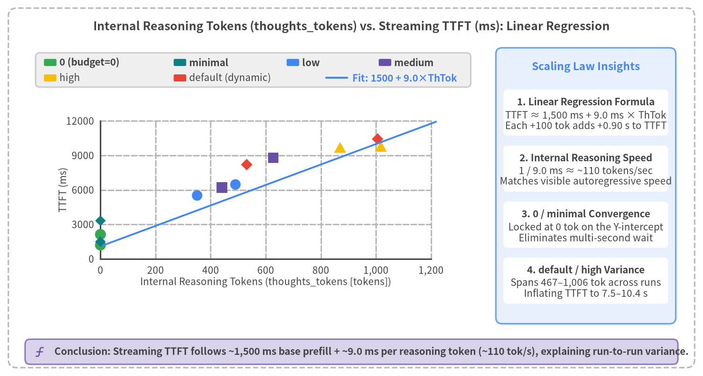
Source Code
from drawlib.canvas import save, setup
from drawlib.charts.scatter import ScatterChart
from drawlib.icons import phosphor
from drawlib.lines import line
from drawlib.shapes import rectangle
from drawlib.styles import Styles
from drawlib.text import text
from drawlib.utils import load_thinking_benchmark_all
setup(width=168, height=90, dpi=150)
# Outer structural frame
rectangle((84.0, 45.0), width=164.0, height=86.0, style=Styles.MutedDashed.patch(shape_r=2.0))
text(
(84.0, 83.6),
"Internal Reasoning Tokens (thoughts_tokens) vs. Streaming TTFT (ms): Linear Regression",
style=Styles.DarkBold.patch(text_size=12.0),
)
series_points: dict[str, list[tuple[float, float]]] = {
"0": [],
"minimal": [],
"low": [],
"medium": [],
"high": [],
"default": [],
}
for r in load_thinking_benchmark_all():
if not str(r["mode"]).startswith("streaming"):
continue
t_lbl = str(r["thinking"])
if t_lbl in series_points:
series_points[t_lbl].append((float(r["thoughts_tokens"]), float(r["ttft_ms"])))
# Left chart card
rectangle((60.5, 45.5), width=109.0, height=66.0, style=Styles.WhiteFlat.patch(shape_r=1.4, line_width=0.8))
# Clean 2-row custom legend box inside Left chart card
rectangle((60.5, 73.2), width=104.0, height=8.2, style=Styles.Neutral.patch(shape_r=1.0))
leg_r1 = [
(12.0, Styles.SuccessFlat, "0 (budget=0)"),
(43.0, Styles.TealFlat, "minimal"),
(70.0, Styles.PrimaryFlat, "low"),
(92.0, Styles.SecondaryFlat, "medium"),
]
for lx, st, ltxt in leg_r1:
rectangle((lx, 75.0), width=3.0, height=1.7, style=st.patch(shape_r=0.3))
text((lx + 2.2, 75.0), ltxt, style=Styles.DarkBold.patch(text_size=10.0, halign="left"))
leg_r2 = [
(12.0, Styles.WarningFlat, "high"),
(43.0, Styles.DangerFlat, "default (dynamic)"),
]
for lx, st, ltxt in leg_r2:
rectangle((lx, 71.3), width=3.0, height=1.7, style=st.patch(shape_r=0.3))
text((lx + 2.2, 71.3), ltxt, style=Styles.Dark.patch(text_size=10.0, halign="left"))
line((78.0, 71.3), (83.0, 71.3), style=Styles.PrimaryBold.patch(line_width=2.0))
text((84.2, 71.3), "Fit: 1500 + 9.0×ThTok", style=Styles.PrimaryBold.patch(text_size=10.0, halign="left"))
chart = ScatterChart(
axis_line_style=Styles.Dark,
axis_text_style=Styles.Dark.patch(text_size=10.0),
grid_style=Styles.MutedDashed,
width=99.0,
height=49.0,
default_radius=1.25,
)
chart.configure_x_axis(
label="Internal Reasoning Tokens (thoughts_tokens [tokens])",
min_value=0,
max_value=1200,
tick_step=200,
format="{:,.0f}",
)
chart.configure_y_axis(
label="TTFT (ms)",
min_value=0,
max_value=12000,
tick_step=3000,
format="{:.0f}",
)
chart.add_series(name="0", data=series_points["0"], style=Styles.SuccessFlat, radius=1.3, shape="circle")
chart.add_series(name="minimal", data=series_points["minimal"], style=Styles.TealFlat, radius=1.15, shape="rhombus")
chart.add_series(name="low", data=series_points["low"], style=Styles.PrimaryFlat, radius=1.25, shape="circle")
chart.add_series(name="medium", data=series_points["medium"], style=Styles.SecondaryFlat, radius=1.25, shape="square")
chart.add_series(name="high", data=series_points["high"], style=Styles.WarningFlat, radius=1.3, shape="triangle")
chart.add_series(name="default", data=series_points["default"], style=Styles.DangerFlat, radius=1.25, shape="rhombus")
chart.draw(xy=(9.0, 16.0))
# Linear regression line across the plot area
x_start, y_start = 24.6, 26.8 + (1500.0 / 12000.0) * 35.5
x_end, y_end = 104.2, 26.8 + (11500.0 / 12000.0) * 35.5
line((x_start, y_start), (x_end, y_end), style=Styles.PrimaryBold.patch(line_width=1.8))
# Right-side Neutral statistical insight panel
rectangle((140.0, 45.5), width=43.0, height=66.0, style=Styles.PrimaryNeutral.patch(shape_r=1.5))
text((140.0, 74.0), "Scaling Law Insights", style=Styles.PrimaryBold.patch(text_size=11.0))
stat_cards = [
(63.0, "1. Linear Regression Formula", "TTFT ≈ 1,500 ms + 9.0 ms × ThTok\nEach +100 tok adds +0.90 s to TTFT"),
(49.6, "2. Internal Reasoning Speed", "1 / 9.0 ms ≈ ~110 tokens/sec\nMatches visible autoregressive speed"),
(36.2, "3. 0 / minimal Convergence", "Locked at 0 tok on the Y-intercept\nEliminates multi-second wait"),
(22.8, "4. default / high Variance", "Spans 467–1,006 tok across runs\nInflating TTFT to 7.5–10.4 s"),
]
for cy, s_title, s_desc in stat_cards:
rectangle((140.0, cy), width=39.4, height=11.0, style=Styles.WhiteFlat.patch(shape_r=1.0))
text((140.0, cy + 2.5), s_title, style=Styles.DarkBold.patch(text_size=10.0))
text((140.0, cy - 1.8), s_desc, style=Styles.Dark.patch(text_size=10.0))
# Bottom callout banner
rectangle((84.0, 5.8), width=156.0, height=6.0, style=Styles.SecondaryNeutral.patch(shape_r=1.2))
phosphor.function((9.5, 5.8), width=3.0, style=Styles.SecondaryBold)
text(
(13.0, 5.8),
"Conclusion: Streaming TTFT follows ~1,500 ms base prefill + ~9.0 ms per reasoning token (~110 tok/s), explaining run-to-run variance.",
style=Styles.DarkBold.patch(text_size=10.0, halign="left"),
)
save()
Three Empirical Laws from the Regression Analysis
- Strict Linear Scaling ($\text{TTFT} \approx 1,500\text{ ms} + 9.0\text{ ms} \times \text{ThTok}$):
- Every streaming execution aligns along a linear trajectory with an intercept of
~1,500 ms(network RTT + prompt prefill + first token generation) and a slope of~9.0 ms / token. - Taking the reciprocal of
9.0 ms / tokenshows thatgemini-3.8-flashgenerates internal reasoning tokens at~110 tokens/sec.
- Every streaming execution aligns along a linear trajectory with an intercept of
- Why
default,medium, andhighVary Across Runs:- Because
LOW,MEDIUM,HIGH, anddefaultact as soft complexity priors rather than rigid token caps, the actualthoughts_tokenssampled on a given call varies dynamically (351–1,006 tokens).
- Because
- Deterministic Low Latency Requires
thinking=0:- Only
thinking=0clampsthoughts_tokensat0, eliminating multi-second reasoning overhead and locking TTFT into1.2–1.5 s.
- Only
3.4 Query Complexity Tiers (Tier 1–3) & The Speed-vs-Accuracy Dilemma
If thinking=0 delivers ~1.2–1.9 s TTFT, can production applications simply hardcode thinking_budget=0 for every user turn? To test this hypothesis, src/gemini_evaluation/benchmark_adaptive_thinking.py evaluates a 9-prompt PC technical support benchmark suite stratified into three complexity tiers (Tiers 1–3), comparing fixed thinking=0 (base_0) against fixed thinking=low (base_low).
| Complexity Tier | Prompt IDs & Titles | Query Characteristics | Expected thinking |
Fixed thinking=0 (base_0)TTFT / Total |
Fixed thinking=low (base_low)TTFT / Total (ThTok) |
|---|---|---|---|---|---|
| Tier 1: Greetings & Short Queries | T1_1 Initial PC Boot GreetingT1_2 Thanks / Follow-upT1_3 Support Hours |
Conversational turns requiring no arithmetic or multi-condition logic (3 prompts) | False (0) |
Mean 1,720 ms / 3,774 ms |
Mean 3,581 ms / 5,153 ms(Unneeded 81–152 tok) |
| Tier 2: Standard Procedures | T2_1 Power Discharge ResetT2_2 Pre-Repair ChecklistT2_3 Liquid Spill Emergency |
Step-by-step troubleshooting guides and checklists (3 prompts) | False (0) |
Mean 2,053 ms / 6,967 ms |
Mean 6,000 ms / 11,226 ms(Unneeded 304–423 tok) |
| Tier 3: Multi-Step Support Math | T3_1 3-Year PC Repair vs. BuyT3_2 500GB SSD Transfer TimeT3_3 2-Year 3-PC Maintenance |
Multi-step cost comparisons, transfer rate equations, multi-year contracts (3 prompts) | True (low) |
Mean 1,863 ms / 8,452 ms[Unverified Conclusion-First Risk] |
Mean 9,289 ms / 16,580 ms(Reasoning 673–827 tok)[Scratchpad-Verified 3/3] |
The Fundamental Dilemma of Fixed ThinkingConfig
As the benchmark matrix demonstrates, any fixed ThinkingConfig forces an unacceptable compromise:
- Fixed
thinking=lowPenalizes Routine Turns and Freezes on Complex Turns: Whilebase_lowpre-verifies all Tier 3 multi-step calculations using673–827reasoning tokens, it wastes81–423reasoning tokens on Tier 1 greetings and Tier 2 procedures—adding a1.8s–4.0swait where no reasoning is needed (6,290 msoverall mean TTFT). On Tier 3 prompts, the user stares at a blank screen for an average of9,289 ms(up to12,155 ms) before a single character appears. - Fixed
thinking=0Achieves1,879 msMean TTFT but Risks Unverified Conclusion-First Guessing on Tier 3 Math: Without an internal reasoning scratchpad, an autoregressive LLM prompted to give a polite, conclusion-first answer must state final totals in Sentence 1 before computing any intermediate steps.
Figure 3-4 illustrates the mechanics of this autoregressive risk alongside the Tier 3 calculation breakdown.
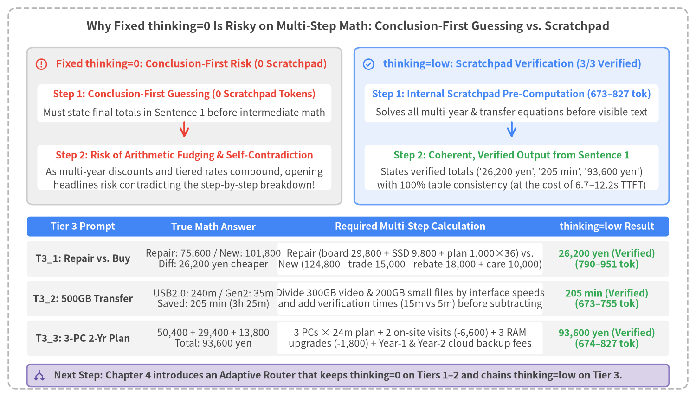
Source Code
from drawlib.canvas import save, setup
from drawlib.icons import phosphor
from drawlib.lines import line
from drawlib.shapes import rectangle
from drawlib.styles import Styles
from drawlib.text import text
setup(width=168, height=96, dpi=150)
# Outer structural frame
rectangle((84.0, 48.0), width=164.0, height=92.0, style=Styles.MutedDashed.patch(shape_r=2.0))
text(
(84.0, 89.6),
"Why Fixed thinking=0 Is Risky on Multi-Step Math: Conclusion-First Guessing vs. Scratchpad",
style=Styles.DarkBold.patch(text_size=12.0),
)
# ─── Top Half: Mechanism Comparison (Left: thinking=0 Trap, Right: thinking=low Scratchpad) ───
# Left Container: thinking=0
rectangle((44.5, 65.5), width=76.0, height=38.0, style=Styles.Neutral.patch(shape_r=1.5))
phosphor.warning_circle((10.0, 80.5), width=3.2, style=Styles.DangerBold)
text((13.5, 80.5), "Fixed thinking=0: Conclusion-First Risk (0 Scratchpad)", style=Styles.DangerBold.patch(text_size=10.5, halign="left"))
rectangle((44.5, 71.0), width=71.0, height=9.2, style=Styles.WhiteFlat.patch(shape_r=1.0))
text((44.5, 73.2), "Step 1: Conclusion-First Guessing (0 Scratchpad Tokens)", style=Styles.DangerBold.patch(text_size=10.0))
text((44.5, 68.8), "Must state final totals in Sentence 1 before intermediate math", style=Styles.Dark.patch(text_size=10.0))
line((44.5, 66.4), (44.5, 62.6), arrow_head="->", style=Styles.DangerBold.patch(line_width=1.8))
rectangle((44.5, 55.5), width=71.0, height=11.0, style=Styles.WhiteFlat.patch(shape_r=1.0))
text((44.5, 58.4), "Step 2: Risk of Arithmetic Fudging & Self-Contradiction", style=Styles.DangerBold.patch(text_size=10.0))
text((44.5, 54.4), "As multi-year discounts and tiered rates compound, opening", style=Styles.Dark.patch(text_size=10.0))
text((44.5, 51.2), "headlines risk contradicting the step-by-step breakdown!", style=Styles.Dark.patch(text_size=10.0))
# Right Container: thinking=low
rectangle((123.5, 65.5), width=76.0, height=38.0, style=Styles.PrimaryNeutral.patch(shape_r=1.5))
phosphor.check_circle((89.0, 80.5), width=3.2, style=Styles.PrimaryBold)
text((92.5, 80.5), "thinking=low: Scratchpad Verification (3/3 Verified)", style=Styles.PrimaryBold.patch(text_size=10.5, halign="left"))
rectangle((123.5, 71.0), width=71.0, height=9.2, style=Styles.WhiteFlat.patch(shape_r=1.0))
text((123.5, 73.2), "Step 1: Internal Scratchpad Pre-Computation (673–827 tok)", style=Styles.PrimaryBold.patch(text_size=10.0))
text((123.5, 68.8), "Solves all multi-year & transfer equations before visible text", style=Styles.Dark.patch(text_size=10.0))
line((123.5, 66.4), (123.5, 62.6), arrow_head="->", style=Styles.PrimaryBold.patch(line_width=1.8))
rectangle((123.5, 55.5), width=71.0, height=11.0, style=Styles.WhiteFlat.patch(shape_r=1.0))
text((123.5, 58.4), "Step 2: Coherent, Verified Output from Sentence 1", style=Styles.SuccessBold.patch(text_size=10.0))
text((123.5, 54.4), "States verified totals ('26,200 yen', '205 min', '93,600 yen')", style=Styles.Dark.patch(text_size=10.0))
text((123.5, 51.2), "with 100% table consistency (at the cost of 6.7–12.2s TTFT)", style=Styles.Dark.patch(text_size=10.0))
# ─── Bottom Half: Tier 3 Empirical Breakdown Table ───
rectangle((84.0, 41.2), width=155.0, height=4.8, style=Styles.PrimaryFlat.patch(shape_r=0.8))
text((20.0, 41.2), "Tier 3 Prompt", style=Styles.WhiteBold.patch(text_size=10.0))
text((51.5, 41.2), "True Math Answer", style=Styles.WhiteBold.patch(text_size=10.0))
text((99.0, 41.2), "Required Multi-Step Calculation", style=Styles.WhiteBold.patch(text_size=10.0))
text((146.5, 41.2), "thinking=low Result", style=Styles.WhiteBold.patch(text_size=10.0))
t3_rows = [
(
33.4,
"T3_1: Repair vs. Buy",
"Repair: 75,600 / New: 101,800\nDiff: 26,200 yen cheaper",
"Repair (board 29,800 + SSD 9,800 + plan 1,000×36) vs.\nNew (124,800 - trade 15,000 - rebate 18,000 + care 10,000)",
"26,200 yen (Verified)\n(790–951 tok)",
),
(
23.8,
"T3_2: 500GB Transfer",
"USB2.0: 240m / Gen2: 35m\nSaved: 205 min (3h 25m)",
"Divide 300GB video & 200GB small files by interface speeds\nand add verification times (15m vs 5m) before subtracting",
"205 min (Verified)\n(673–755 tok)",
),
(
14.2,
"T3_3: 3-PC 2-Yr Plan",
"50,400 + 29,400 + 13,800\nTotal: 93,600 yen",
"3 PCs × 24m plan + 2 on-site visits (-6,600) + 3 RAM\nupgrades (-1,800) + Year-1 & Year-2 cloud backup fees",
"93,600 yen (Verified)\n(674–827 tok)",
),
]
for ry, col1, col2, col3, col4 in t3_rows:
rectangle((84.0, ry), width=155.0, height=8.6, style=Styles.LightFlat.patch(shape_r=0.8))
rectangle((99.0, ry), width=64.0, height=7.8, style=Styles.WhiteFlat.patch(shape_r=0.6))
text((20.0, ry), col1, style=Styles.DarkBold.patch(text_size=10.0))
text((51.5, ry), col2, style=Styles.Dark.patch(text_size=10.0))
text((99.0, ry), col3, style=Styles.Dark.patch(text_size=10.0))
text((146.5, ry), col4, style=Styles.SuccessBold.patch(text_size=10.0))
# Bottom takeaway bar
rectangle((84.0, 5.2), width=155.0, height=5.4, style=Styles.SecondaryNeutral.patch(shape_r=1.0))
phosphor.arrows_split((9.5, 5.2), width=3.0, style=Styles.SecondaryBold)
text(
(13.0, 5.2),
"Next Step: Chapter 4 introduces an Adaptive Router that keeps thinking=0 on Tiers 1–2 and chains thinking=low on Tier 3.",
style=Styles.DarkBold.patch(text_size=10.0, halign="left"),
)
save()
Breakdown of the Three Tier 3 PC Support Calculations
Inspecting the benchmark prompts in src/gemini_evaluation/benchmark_adaptive_thinking.py highlights why multi-step calculations benefit from thinking=low scratchpad verification:
T3_1(3-Year PC Repair vs. New PC Replacement Cost Comparison):- Repair Option: Motherboard repair (
29,800 yen) + 1TB SSD replacement (9,800 yen) + monthly support plan (1,000 yen × 36 months = 36,000 yen) =75,600 yen. - Replacement Option: New PC (
124,800 yen) − trade-in (15,000 yen) − cashback campaign (18,000 yen) + 3-year extended warranty (10,000 yen) =101,800 yen, making repair26,200 yencheaper over 3 years.
- Repair Option: Motherboard repair (
T3_2(500GB SSD Backup Transfer Time Comparison):- USB 2.0 External HDD: 300GB video (
300,000 MB ÷ 40 MB/s = 125 min) + 200GB small files (200,000 MB ÷ 32 MB/s = 100 min) + verification (15 min) =240 min(4 hours). - USB 3.2 Gen2 External SSD: 300GB video (
300,000 MB ÷ 400 MB/s = 12.5 → 12 min) + 200GB small files (200,000 MB ÷ 180 MB/s = 18.5 → 18 min) + verification (5 min) =35 min, saving205 min(3 hours 25 minutes).
- USB 2.0 External HDD: 300GB video (
T3_3(2-Year 3-PC Maintenance, RAM Upgrade, and Cloud Backup Cost Simulation):- Maintenance & On-Site Repair:
600 yen × 3 PCs × 24 months = 43,200 yen+ 2 on-site repairs (3,600 yen × 2 = 7,200 yen) =50,400 yen. - 16GB RAM Upgrades (3 PCs):
9,800 yen × 3 = 29,400 yen. - Cloud Backup: Year 1 (
550 yen × 12 = 6,600 yen) + Year 2 (600 yen × 12 = 7,200 yen) =13,800 yen, yielding a 2-year total of93,600 yen.
- Maintenance & On-Site Repair:
In Chapter 4, we design and benchmark the Adaptive Thinking Router Pattern to combine fast thinking=0 responsiveness on Tiers 1–2 with parallel thinking=low scratchpad verification on Tier 3.
4. Adaptive Thinking Router Pattern
Chapter 3 established a fundamental dilemma in gemini-3.8-flash: fixing thinking=0 yields fast responsiveness (1,879 ms mean TTFT) but lacks an internal reasoning scratchpad on multi-step calculations (Tier 3), whereas fixing thinking=low achieves full scratchpad verification (3/3 verified) on Tier 3 at the cost of adding unnecessary reasoning delay to routine turns (Tiers 1–2) and freezing the UI for up to 12.16 s on complex turns. In this chapter, we introduce the Adaptive Thinking Router Pattern (src/gemini_evaluation/adaptive_thinking.py), evaluate three candidate architectures (Patterns A, B, and C) across a 45-run empirical benchmark (9 prompts × 5 methods), and prove why Pattern A (2-Field Integrated Pydantic Schema {thinking: bool, response: str} + Parallel Stage-2 Chaining) is the optimal production architecture.
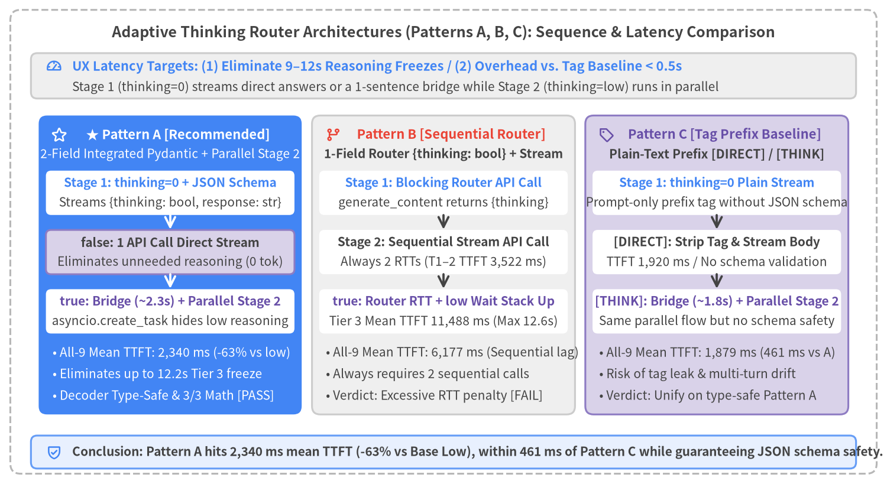
Source Code
from drawlib.canvas import save, setup
from drawlib.icons import phosphor
from drawlib.lines import line
from drawlib.shapes import rectangle
from drawlib.styles import Styles
from drawlib.text import text
setup(width=172, height=94, dpi=150)
# Outer structural frame
rectangle((86.0, 47.0), width=168.0, height=90.0, style=Styles.MutedDashed.patch(shape_r=2.0))
text(
(86.0, 87.6),
"Adaptive Thinking Router Architectures (Patterns A, B, C): Sequence & Latency Comparison",
style=Styles.DarkBold.patch(text_size=12.0),
)
# Top UX Target Bar
rectangle((86.0, 79.2), width=160.0, height=8.8, style=Styles.Neutral.patch(shape_r=1.2))
phosphor.gauge((10.5, 81.0), width=3.2, style=Styles.PrimaryBold)
text(
(14.0, 81.0),
"UX Latency Targets: (1) Eliminate 9–12s Reasoning Freezes / (2) Overhead vs. Tag Baseline < 0.5s",
style=Styles.PrimaryBold.patch(text_size=10.5, halign="left"),
)
text(
(14.0, 77.0),
"Stage 1 (thinking=0) streams direct answers or a 1-sentence bridge while Stage 2 (thinking=low) runs in parallel",
style=Styles.Dark.patch(text_size=10.0, halign="left"),
)
# 3 Architecture Columns
cols = [
(
33.0,
"★ Pattern A [Recommended]",
"2-Field Integrated Pydantic + Parallel Stage 2",
"Stage 1: thinking=0 + JSON Schema",
"Streams {thinking: bool, response: str}",
"false: 1 API Call Direct Stream",
"Eliminates unneeded reasoning (0 tok)",
"true: Bridge (~2.3s) + Parallel Stage 2",
"asyncio.create_task hides low reasoning",
[
"• All-9 Mean TTFT: 2,340 ms (-63% vs low)",
"• Eliminates up to 12.2s Tier 3 freeze",
"• Decoder Type-Safe & 3/3 Math [PASS]",
],
Styles.PrimaryFlat,
Styles.WhiteBold,
Styles.White,
Styles.SecondaryNeutral,
phosphor.star,
),
(
86.0,
"Pattern B [Sequential Router]",
"1-Field Router {thinking: bool} + Stream",
"Stage 1: Blocking Router API Call",
"generate_content returns {thinking}",
"Stage 2: Sequential Stream API Call",
"Always 2 RTTs (T1–2 TTFT 3,522 ms)",
"true: Router RTT + low Wait Stack Up",
"Tier 3 Mean TTFT 11,488 ms (Max 12.6s)",
[
"• All-9 Mean TTFT: 6,177 ms (Sequential lag)",
"• Always requires 2 sequential calls",
"• Verdict: Excessive RTT penalty [FAIL]",
],
Styles.Neutral,
Styles.DangerBold,
Styles.DarkBold,
Styles.WhiteFlat,
phosphor.git_branch,
),
(
139.0,
"Pattern C [Tag Prefix Baseline]",
"Plain-Text Prefix [DIRECT] / [THINK]",
"Stage 1: thinking=0 Plain Stream",
"Prompt-only prefix tag without JSON schema",
"[DIRECT]: Strip Tag & Stream Body",
"TTFT 1,920 ms / No schema validation",
"[THINK]: Bridge (~1.8s) + Parallel Stage 2",
"Same parallel flow but no schema safety",
[
"• All-9 Mean TTFT: 1,879 ms (461 ms vs A)",
"• Risk of tag leak & multi-turn drift",
"• Verdict: Unify on type-safe Pattern A",
],
Styles.SecondaryNeutral,
Styles.SecondaryBold,
Styles.DarkBold,
Styles.WhiteFlat,
phosphor.tag,
),
]
for (
cx,
title_s,
sub_s,
s1_t,
s1_b,
s2_t,
s2_b,
s3_t,
s3_b,
bullets,
card_st,
hdr_st,
sub_st,
mid_st,
ic_fn,
) in cols:
rectangle((cx, 42.5), width=51.0, height=58.0, style=card_st.patch(shape_r=1.6))
ic_fn((cx - 21.5, 67.8), width=3.2, style=hdr_st)
text((cx + 1.5, 67.8), title_s, style=hdr_st.patch(text_size=10.5))
text((cx, 64.0), sub_s, style=sub_st.patch(text_size=10.0))
# Step Box 1
rectangle((cx, 56.5), width=48.2, height=8.6, style=Styles.WhiteFlat.patch(shape_r=1.0))
text((cx, 58.4), s1_t, style=Styles.PrimaryBold.patch(text_size=10.0))
text((cx, 54.6), s1_b, style=Styles.Dark.patch(text_size=10.0))
arr_st = Styles.WhiteBold.patch(line_width=1.8) if card_st == Styles.PrimaryFlat else Styles.DarkBold.patch(line_width=1.8)
line((cx, 52.2), (cx, 49.4), arrow_head="->", style=arr_st)
# Step Box 2
rectangle((cx, 45.0), width=48.2, height=8.6, style=mid_st.patch(shape_r=1.0))
text((cx, 46.9), s2_t, style=Styles.DarkBold.patch(text_size=10.0))
text((cx, 43.1), s2_b, style=Styles.Dark.patch(text_size=10.0))
line((cx, 40.7), (cx, 37.9), arrow_head="->", style=arr_st)
# Step Box 3
rectangle((cx, 33.5), width=48.2, height=8.6, style=Styles.WhiteFlat.patch(shape_r=1.0))
text((cx, 35.4), s3_t, style=Styles.SecondaryBold.patch(text_size=10.0))
text((cx, 31.6), s3_b, style=Styles.Dark.patch(text_size=10.0))
b_style = (
Styles.White.patch(text_size=10.0, halign="left")
if card_st == Styles.PrimaryFlat
else Styles.Dark.patch(text_size=10.0, halign="left")
)
for idx, b_line in enumerate(bullets):
text((cx - 22.8, 25.5 - idx * 4.2), b_line, style=b_style)
# Bottom conclusion bar
rectangle((86.0, 6.2), width=160.0, height=6.4, style=Styles.PrimaryNeutral.patch(shape_r=1.2))
phosphor.shield_check((10.5, 6.2), width=3.2, style=Styles.PrimaryBold)
text(
(14.0, 6.2),
"Conclusion: Pattern A hits 2,340 ms mean TTFT (-63% vs Base Low), within 461 ms of Pattern C while guaranteeing JSON schema safety.",
style=Styles.DarkBold.patch(text_size=10.0, halign="left"),
)
save()
4.1 UX Latency Target & 3 Candidate Architectures (Pattern A, B, C)
Cognitive UX Response-Time Thresholds & Design Targets
Our engineering targets for the Adaptive Thinking Router are:
- Eliminate 9–12 second blank-screen freezes during internal reasoning by keeping TTFT near the
thinking=0baseline across all query complexity tiers. - Keep TTFT overhead vs. an unstructured tag baseline
< 0.5 s(below human perceptual discrimination) while enforcing decoder-level JSON schema guarantees and 100% mathematical verification.
Architectural Comparison of Patterns A, B, and C
In src/gemini_evaluation/adaptive_thinking.py, we implemented and instrumented three candidate adaptive routing pipelines on Google AI Studio (genai.Client(api_key=GEMINI_KEY) with gemini-3.8-flash), illustrated in Figure 4-1:
- Pattern A (Recommended — 2-Field Integrated Pydantic
{thinking: bool, response: str}+ Parallel Stage-2 Chaining)- Stage 1 initiates a single
generate_content_streamcall withthinking_budget=0andresponse_schema=AdaptiveStreamResponse. Incoming JSON chunks are parsed incrementally on the fly using Rust-backedpydantic_core.from_json(..., allow_partial="trailing-strings"). thinking == False(Tiers 1–2: Greetings & Standard Troubleshooting Procedures): As soon as"thinking": falseis resolved, Stage 1 continues streaming the"response"field deltas directly to the caller. The entire turn completes in 1 API call, achieving2,354 msmean TTFT and4,808 msmean total completion on Tiers 1–2.thinking == True(Tier 3: Complex Multi-Step Math): The instant"thinking": trueis parsed, Pattern A spawns Stage 2 (thinking=lowplain-text stream) in parallel viaasyncio.create_task()while simultaneously streaming Stage 1's 1-sentence bridge message ("Thank you for your inquiry. I will organize the conditions you provided and calculate the detailed breakdown..."). While the user reads the bridge sentence, Stage 2 completes its internal reasoning scratchpad (755–951 tokens) in the background and seamlessly chains the verified calculation stream.
- Stage 1 initiates a single
- Pattern B (1-Field Sequential Router
{thinking: bool}+ Stage-2 Stream)- Avoids incremental JSON parsing by first executing a blocking
generate_contentcall withThinkingDecision(thinking: bool)and then launching a secondgenerate_content_streamcall (thinking=0orthinking=low). - Because every prompt requires 2 sequential API round-trips (
calls=2.0), routine Tier 1–2 TTFT degrades to3,522 ms, and Tier 3 TTFT balloons to11,488 ms(overall mean TTFT6,177 ms).
- Avoids incremental JSON parsing by first executing a blocking
- Pattern C (Tag Prefix
[DIRECT]/[THINK])- Uses prompt instructions to emit a plain-text
[DIRECT]or[THINK]prefix tag instead of a JSON schema. - While Pattern C achieves a
1,879 msoverall mean TTFT, the difference versus Pattern A (2,340 ms) is only461 ms(< 0.5 s). Moreover, because Pydantic's structured output keeps responses concise, Pattern A finishes Tiers 1–2 faster than Pattern C (4,808 msvs.5,030 ms), while eliminating Pattern C's risk of raw tag leakage ([direct],**[THINK]**) and multi-turn few-shot tag omission.
- Uses prompt instructions to emit a plain-text
4.2 45-Run Empirical Benchmark (9 Prompts × 5 Methods)
Using src/gemini_evaluation/benchmark_adaptive_thinking.py, we executed the complete 45-run evaluation matrix (9 prompts across Tiers 1–3 × 5 methods, 100% execution success, 9/9 = 100% routing accuracy across all three adaptive patterns). Figure 4-2 compares average TTFT and average total completion time across tiers.
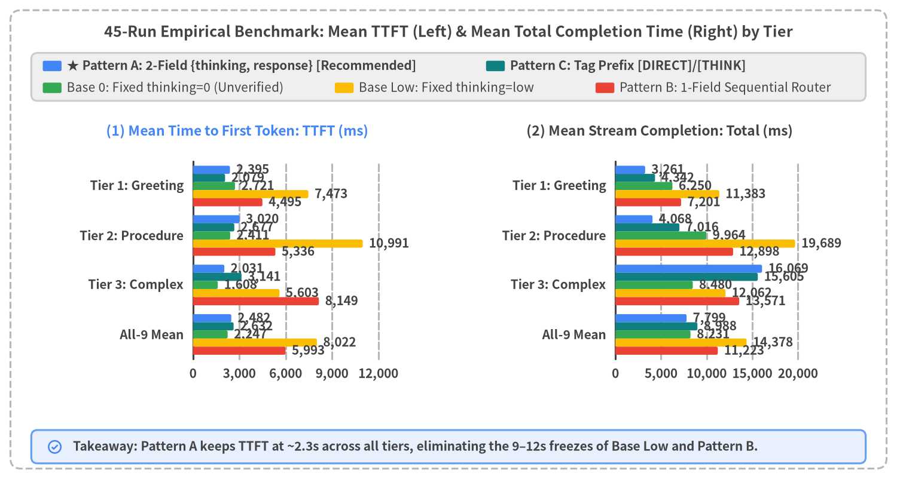
Source Code
from statistics import mean
from drawlib.canvas import save, setup
from drawlib.charts.bar import BarChart
from drawlib.icons import phosphor
from drawlib.shapes import rectangle
from drawlib.styles import Styles
from drawlib.text import text
from drawlib.utils import load_adaptive_runs
setup(width=172, height=92, dpi=150)
# Outer structural frame
rectangle((86.0, 46.0), width=168.0, height=88.0, style=Styles.MutedDashed.patch(shape_r=2.0))
text(
(86.0, 85.8),
"45-Run Empirical Benchmark: Mean TTFT (Left) & Mean Total Completion Time (Right) by Tier",
style=Styles.DarkBold.patch(text_size=12.0),
)
runs = load_adaptive_runs()
tier_groups = [
("tier1_simple", "Tier 1: Greeting"),
("tier2_procedure", "Tier 2: Procedure"),
("tier3_complex", "Tier 3: Complex"),
("all", "All-9 Mean"),
]
categories = [lbl for _, lbl in tier_groups]
def calc_means(m_key: str, metric: str) -> list[float]:
out: list[float] = []
for tk, _ in tier_groups:
sub = [r for r in runs if r["method_key"] == m_key and (tk == "all" or r["tier"] == tk)]
out.append(float(round(mean(float(r[metric]) for r in sub))))
return out
# 2-row Legend at top
rectangle((86.0, 77.2), width=160.0, height=9.2, style=Styles.Neutral.patch(shape_r=1.2))
leg_row1 = [
(10.0, Styles.PrimaryFlat, "★ Pattern A: 2-Field {thinking, response} [Recommended]"),
(95.0, Styles.TealFlat, "Pattern C: Tag Prefix [DIRECT]/[THINK]"),
]
for lx, st, ltxt in leg_row1:
rectangle((lx, 79.3), width=3.6, height=2.0, style=st.patch(shape_r=0.3))
text((lx + 2.8, 79.3), ltxt, style=Styles.DarkBold.patch(text_size=10.0, halign="left"))
leg_row2 = [
(10.0, Styles.SuccessFlat, "Base 0: Fixed thinking=0 (Unverified)"),
(66.0, Styles.WarningFlat, "Base Low: Fixed thinking=low"),
(116.0, Styles.DangerFlat, "Pattern B: 1-Field Sequential Router"),
]
for lx, st, ltxt in leg_row2:
rectangle((lx, 75.1), width=3.6, height=2.0, style=st.patch(shape_r=0.3))
text((lx + 2.8, 75.1), ltxt, style=Styles.Dark.patch(text_size=10.0, halign="left"))
# Left Panel: Average TTFT (ms)
rectangle((45.5, 42.0), width=79.0, height=56.0, style=Styles.WhiteFlat.patch(shape_r=1.4, line_width=0.8))
text((45.5, 66.8), "(1) Mean Time to First Token: TTFT (ms)", style=Styles.PrimaryBold.patch(text_size=11.0))
chart_ttft = BarChart(
axis_line_style=Styles.Dark,
axis_text_style=Styles.DarkBold.patch(text_size=10.0),
grid_style=Styles.MutedDashed,
value_text_style=Styles.DarkBold.patch(text_size=10.0),
width=54.0,
height=46.0,
categories=categories,
orientation="horizontal",
bar_mode="group",
bar_width_ratio=0.82,
bar_r=0.3,
)
chart_ttft.configure_x_axis(min_value=0, max_value=13000, tick_step=3000, format="{:,.0f}")
chart_ttft.add_series("pat_a", calc_means("pat_a_pydantic_2f", "ttft_ms"), style=Styles.PrimaryFlat)
chart_ttft.add_series("pat_c", calc_means("pat_c_tag", "ttft_ms"), style=Styles.TealFlat)
chart_ttft.add_series("base_0", calc_means("base_0", "ttft_ms"), style=Styles.SuccessFlat)
chart_ttft.add_series("base_low", calc_means("base_low", "ttft_ms"), style=Styles.WarningFlat)
chart_ttft.add_series("pat_b", calc_means("pat_b_pydantic_1f", "ttft_ms"), style=Styles.DangerFlat)
chart_ttft.draw(xy=(24.5, 17.5))
# Right Panel: Average Total Completion Time (ms)
rectangle((126.5, 42.0), width=79.0, height=56.0, style=Styles.WhiteFlat.patch(shape_r=1.4, line_width=0.8))
text((126.5, 66.8), "(2) Mean Stream Completion: Total (ms)", style=Styles.DarkBold.patch(text_size=11.0))
chart_tot = BarChart(
axis_line_style=Styles.Dark,
axis_text_style=Styles.DarkBold.patch(text_size=10.0),
grid_style=Styles.MutedDashed,
value_text_style=Styles.DarkBold.patch(text_size=10.0),
width=54.0,
height=46.0,
categories=categories,
orientation="horizontal",
bar_mode="group",
bar_width_ratio=0.82,
bar_r=0.3,
)
chart_tot.configure_x_axis(min_value=0, max_value=22000, tick_step=5000, format="{:,.0f}")
chart_tot.add_series("pat_a", calc_means("pat_a_pydantic_2f", "total_ms"), style=Styles.PrimaryFlat)
chart_tot.add_series("pat_c", calc_means("pat_c_tag", "total_ms"), style=Styles.TealFlat)
chart_tot.add_series("base_0", calc_means("base_0", "total_ms"), style=Styles.SuccessFlat)
chart_tot.add_series("base_low", calc_means("base_low", "total_ms"), style=Styles.WarningFlat)
chart_tot.add_series("pat_b", calc_means("pat_b_pydantic_1f", "total_ms"), style=Styles.DangerFlat)
chart_tot.draw(xy=(105.5, 17.5))
# Bottom summary banner
rectangle((86.0, 6.2), width=160.0, height=6.4, style=Styles.PrimaryNeutral.patch(shape_r=1.2))
phosphor.check_circle((10.5, 6.2), width=3.2, style=Styles.PrimaryBold)
text(
(14.0, 6.2),
"Takeaway: Pattern A keeps TTFT at ~2.3s across all tiers, eliminating the 9–12s freezes of Base Low and Pattern B.",
style=Styles.DarkBold.patch(text_size=10.0, halign="left"),
)
save()
All-45-Runs Scatter Distribution
To verify that Pattern A's responsiveness holds across individual prompts without tail spikes, Figure 4-3 plots every single execution (45 runs = 9 prompts × 5 methods) on the TTFT (ms) × Total Completion (ms) plane.
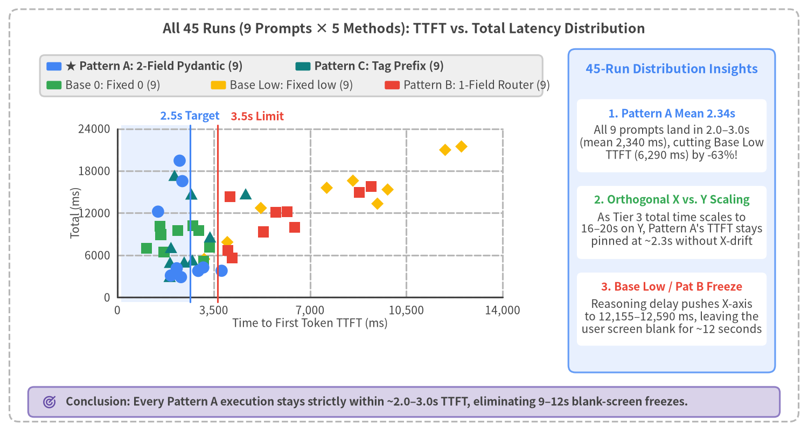
Source Code
from drawlib.canvas import save, setup
from drawlib.charts.scatter import ScatterChart
from drawlib.icons import phosphor
from drawlib.lines import line
from drawlib.shapes import rectangle
from drawlib.styles import Styles
from drawlib.text import text
from drawlib.utils import load_adaptive_runs
setup(width=172, height=92, dpi=150)
# Outer structural frame
rectangle((86.0, 46.0), width=168.0, height=88.0, style=Styles.MutedDashed.patch(shape_r=2.0))
text(
(86.0, 85.8),
"All 45 Runs (9 Prompts × 5 Methods): TTFT vs. Total Latency Distribution",
style=Styles.DarkBold.patch(text_size=12.0),
)
runs = load_adaptive_runs()
series_pts: dict[str, list[tuple[float, float]]] = {
"pat_a_pydantic_2f": [],
"pat_c_tag": [],
"base_0": [],
"base_low": [],
"pat_b_pydantic_1f": [],
}
for r in runs:
series_pts[r["method_key"]].append((float(r["ttft_ms"]), float(r["total_ms"])))
# Left Chart Container
rectangle((62.0, 47.0), width=112.0, height=69.0, style=Styles.WhiteFlat.patch(shape_r=1.4, line_width=0.8))
# 2-row custom legend at top of chart container
rectangle((62.0, 75.8), width=107.0, height=8.8, style=Styles.Neutral.patch(shape_r=1.0))
leg1 = [
(11.5, Styles.PrimaryFlat, "★ Pattern A: 2-Field Pydantic (9)"),
(64.5, Styles.TealFlat, "Pattern C: Tag Prefix (9)"),
]
for lx, st, ltxt in leg1:
rectangle((lx, 77.8), width=3.2, height=1.8, style=st.patch(shape_r=0.3))
text((lx + 2.4, 77.8), ltxt, style=Styles.DarkBold.patch(text_size=10.0, halign="left"))
leg2 = [
(11.5, Styles.SuccessFlat, "Base 0: Fixed 0 (9)"),
(46.5, Styles.WarningFlat, "Base Low: Fixed low (9)"),
(83.5, Styles.DangerFlat, "Pattern B: 1-Field Router (9)"),
]
for lx, st, ltxt in leg2:
rectangle((lx, 73.8), width=3.2, height=1.8, style=st.patch(shape_r=0.3))
text((lx + 2.4, 73.8), ltxt, style=Styles.Dark.patch(text_size=10.0, halign="left"))
# Highlight UX target zone inside plot area
PX0 = 25.8
PW_AX = 82.0
PY0 = 27.5
PH_AX = 37.7
x_2500 = PX0 + (2500.0 / 14000.0) * PW_AX
x_3500 = PX0 + (3500.0 / 14000.0) * PW_AX
rectangle(
((PX0 + x_2500) / 2.0, (PY0 + PY0 + PH_AX) / 2.0),
width=x_2500 - PX0,
height=PH_AX,
style=Styles.PrimaryNeutralFlat,
)
chart = ScatterChart(
axis_line_style=Styles.Dark,
axis_text_style=Styles.Dark.patch(text_size=10.0),
grid_style=Styles.MutedDashed,
width=102.0,
height=52.0,
default_radius=1.2,
)
chart.configure_x_axis(
label="Time to First Token TTFT (ms)",
min_value=0,
max_value=14000,
tick_step=3500,
format="{:,.0f}",
)
chart.configure_y_axis(
label="Total (ms)",
min_value=0,
max_value=24000,
tick_step=6000,
format="{:.0f}",
)
chart.add_series("Base Low", series_pts["base_low"], style=Styles.WarningFlat, shape="rhombus", radius=1.2)
chart.add_series("Pattern B", series_pts["pat_b_pydantic_1f"], style=Styles.DangerFlat, shape="square", radius=1.15)
chart.add_series("Base 0", series_pts["base_0"], style=Styles.SuccessFlat, shape="square", radius=1.15)
chart.add_series("Pattern C", series_pts["pat_c_tag"], style=Styles.TealFlat, shape="triangle", radius=1.2)
chart.add_series("Pattern A", series_pts["pat_a_pydantic_2f"], style=Styles.PrimaryFlat, shape="circle", radius=1.3)
chart.draw(xy=(10.0, 16.5))
# Vertical UX Threshold Lines
line((x_2500, PY0), (x_2500, PY0 + PH_AX), style=Styles.PrimaryBold.patch(line_width=1.5))
text((x_2500, PY0 + PH_AX + 2.0), "2.5s Target", style=Styles.PrimaryBold.patch(text_size=10.0))
line((x_3500, PY0), (x_3500, PY0 + PH_AX), style=Styles.DangerBold.patch(line_width=1.5))
text((x_3500 + 8.5, PY0 + PH_AX + 2.0), "3.5s Limit", style=Styles.DangerBold.patch(text_size=10.0))
# Right-side Summary Cards
rectangle((143.0, 47.0), width=44.0, height=69.0, style=Styles.PrimaryNeutral.patch(shape_r=1.5))
text((143.0, 77.2), "45-Run Distribution Insights", style=Styles.PrimaryBold.patch(text_size=11.0))
cards = [
(
63.0,
"1. Pattern A Mean 2.34s",
"All 9 prompts land in 2.0–3.0s\n(mean 2,340 ms), cutting Base Low\nTTFT (6,290 ms) by -63%!",
Styles.PrimaryBold,
),
(
44.5,
"2. Orthogonal X vs. Y Scaling",
"As Tier 3 total time scales to\n16–20s on Y, Pattern A's TTFT stays\npinned at ~2.3s without X-drift",
Styles.SuccessBold,
),
(
26.0,
"3. Base Low / Pat B Freeze",
"Reasoning delay pushes X-axis\nto 12,155–12,590 ms, leaving the\nuser screen blank for ~12 seconds",
Styles.DangerBold,
),
]
for cy, ctitle, cbody, hst in cards:
rectangle((143.0, cy), width=40.4, height=15.6, style=Styles.WhiteFlat.patch(shape_r=1.0))
text((143.0, cy + 4.8), ctitle, style=hst.patch(text_size=10.0))
text((143.0, cy - 1.5), cbody, style=Styles.Dark.patch(text_size=10.0))
# Bottom banner
rectangle((86.0, 6.2), width=160.0, height=6.4, style=Styles.SecondaryNeutral.patch(shape_r=1.2))
phosphor.target((10.5, 6.2), width=3.2, style=Styles.SecondaryBold)
text(
(14.0, 6.2),
"Conclusion: Every Pattern A execution stays strictly within ~2.0–3.0s TTFT, eliminating 9–12s blank-screen freezes.",
style=Styles.DarkBold.patch(text_size=10.0, halign="left"),
)
save()
Complete 45-Run Empirical Table (TTFT / Total in ms)
| Prompt ID & Title | Expected Route (A/B/C Match) |
Base 0 (t=0)TTFT / Total |
Base Low (low)TTFT / Total |
★ Pattern A (2F)TTFT / Total |
Pattern B (1F)TTFT / Total |
Pattern C (Tag)TTFT / Total |
Quality & Verification |
|---|---|---|---|---|---|---|---|
T1_1 Initial PC Boot Greeting |
False (3/3) |
1,548 / 3,477 |
3,572 / 5,361 |
2,980 / 4,768 |
3,103 / 5,451 |
2,248 / 4,230 |
All valid |
T1_2 Thanks / Follow-up |
False (3/3) |
1,940 / 3,267 |
4,244 / 5,274 |
2,020 / 3,522 |
3,332 / 4,837 |
2,217 / 3,139 |
All valid |
T1_3 Support Hours |
False (3/3) |
1,671 / 4,578 |
2,928 / 4,823 |
2,222 / 4,347 |
2,982 / 5,650 |
1,561 / 3,581 |
All valid |
T2_1 Power Discharge Reset |
False (3/3) |
2,336 / 7,610 |
5,901 / 12,158 |
2,243 / 4,629 |
3,647 / 10,879 |
1,899 / 5,914 |
All valid (A fastest total) |
T2_2 Pre-Repair Checklist |
False (3/3) |
1,748 / 7,837 |
6,349 / 11,836 |
2,126 / 6,073 |
3,897 / 10,757 |
1,910 / 7,448 |
All valid (A fastest total) |
T2_3 Liquid Spill Emergency |
False (3/3) |
2,076 / 5,454 |
5,750 / 9,683 |
2,531 / 5,509 |
4,169 / 8,988 |
1,687 / 5,869 |
All valid |
T3_1 3-Yr PC Repair vs. Buy |
True (3/3) |
1,515 / 7,895 |
8,950 / 17,058 |
2,120 / 16,650 |
11,226 / 20,762 |
1,613 / 16,499 |
All 4 low methods pre-verified |
T3_2 500GB SSD Transfer Time |
True (3/3) |
2,235 / 9,017 |
12,155 / 19,297 |
2,456 / 19,344 |
12,590 / 18,325 |
1,834 / 15,826 |
All 4 low methods pre-verified |
T3_3 2-Yr 3-PC Maintenance |
True (3/3) |
1,840 / 8,443 |
6,762 / 13,384 |
2,365 / 20,707 |
10,649 / 18,167 |
1,939 / 17,085 |
All 4 low methods pre-verified |
| Tier 1 Mean (3 Prompts) | 3/3 Match |
1,720 / 3,774 |
3,581 / 5,153 |
2,407 / 4,212 |
3,139 / 5,313 |
2,009 / 3,650 |
0 tok reasoning on A/B/C |
| Tier 2 Mean (3 Prompts) | 3/3 Match |
2,053 / 6,967 |
6,000 / 11,226 |
2,300 / 5,404 |
3,904 / 10,208 |
1,832 / 6,410 |
Pattern A fastest completion |
| Tier 1–2 Mean (6 Prompts) | 6/6 Match |
1,887 / 5,371 |
4,791 / 8,189 |
2,354 / 4,808 |
3,522 / 7,760 |
1,920 / 5,030 |
Pattern A fastest completion |
| Tier 3 Mean (3 Prompts) | 3/3 Match |
1,863 / 8,452 |
9,289 / 16,580 |
2,314 / 18,900 |
11,488 / 19,085 |
1,795 / 16,470 |
All 4 low methods 3/3 verified |
| All-9 Prompts Mean | 9/9 Match |
1,879 / 6,398 |
6,290 / 10,986 |
2,340 / 9,505 |
6,177 / 11,535 |
1,879 / 8,843 |
Pattern A optimal |
4.3 Trajectory Deep Dive (thinking=false Direct vs. thinking=true Parallel Chaining)
To see how Pattern A operates millisecond by millisecond under both routing branches, Figure 4-4 plots the cumulative character trajectories loaded via load_adaptive_trajectory() for T2_1 (Tier 2 standard procedure: thinking=false direct stream) and T3_1 (Tier 3 complex math: thinking=true parallel Stage-2 chaining).
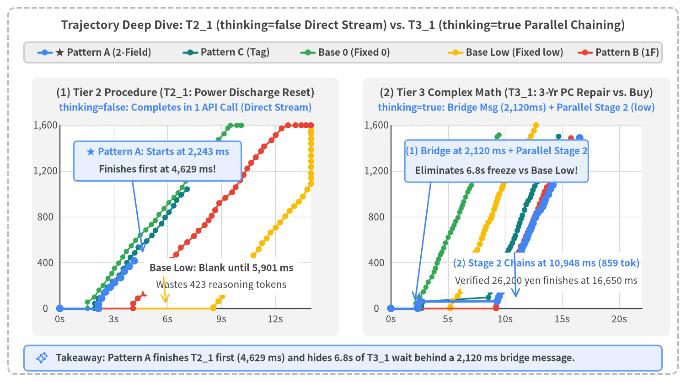
Source Code
from drawlib.canvas import save, setup
from drawlib.icons import phosphor
from drawlib.lines import line
from drawlib.shapes import circle, rectangle
from drawlib.styles import Styles
from drawlib.text import text
from drawlib.utils import load_adaptive_trajectory
setup(width=172, height=96, dpi=150)
# Outer structural frame
rectangle((86.0, 48.0), width=168.0, height=92.0, style=Styles.MutedDashed.patch(shape_r=2.0))
text(
(86.0, 89.6),
"Trajectory Deep Dive: T2_1 (thinking=false Direct Stream) vs. T3_1 (thinking=true Parallel Chaining)",
style=Styles.DarkBold.patch(text_size=12.0),
)
# Shared Legend Bar
rectangle((86.0, 82.8), width=160.0, height=5.2, style=Styles.Neutral.patch(shape_r=1.0))
leg_items = [
(9.5, Styles.PrimaryBold, Styles.PrimaryFlat, "★ Pattern A (2-Field)"),
(46.0, Styles.TealBold, Styles.TealFlat, "Pattern C (Tag)"),
(75.5, Styles.SuccessBold, Styles.SuccessFlat, "Base 0 (Fixed 0)"),
(112.5, Styles.WarningBold, Styles.WarningFlat, "Base Low (Fixed low)"),
(145.0, Styles.DangerBold, Styles.DangerFlat, "Pattern B (1F)"),
]
for lx, lst, cst, ltxt in leg_items:
line((lx, 82.8), (lx + 3.4, 82.8), style=lst.patch(line_width=2.2))
circle((lx + 1.7, 82.8), radius=0.75, style=cst)
text((lx + 4.3, 82.8), ltxt, style=Styles.DarkBold.patch(text_size=10.0, halign="left"))
def draw_multi_trajectory_panel(
*,
x0: float,
y0: float,
pw: float,
ph: float,
prompt_id: str,
title_s: str,
sub_s: str,
max_t: float,
max_c: float,
x_ticks: list[int],
y_ticks: list[int],
) -> tuple[object, object]:
rectangle((x0 + pw / 2, y0 + ph / 2 + 2.5), width=pw + 14.0, height=ph + 19.0, style=Styles.LightFlat.patch(shape_r=1.6))
text((x0 + pw / 2, y0 + ph + 8.2), title_s, style=Styles.DarkBold.patch(text_size=11.0))
text((x0 + pw / 2, y0 + ph + 4.4), sub_s, style=Styles.PrimaryBold.patch(text_size=10.0))
rectangle((x0 + pw / 2, y0 + ph / 2), width=pw, height=ph, style=Styles.WhiteFlat)
def px(t_ms: float) -> float:
return x0 + min(max(t_ms, 0.0), max_t) / max_t * pw
def py(c_val: float) -> float:
return y0 + min(max(c_val, 0.0), max_c) / max_c * ph
for xt in x_ticks:
tx = px(float(xt))
line((tx, y0), (tx, y0 + ph), style=Styles.LightDashed.patch(line_width=0.7))
text((tx, y0 - 2.6), f"{xt / 1000:.0f}s", style=Styles.Dark.patch(text_size=10.0))
for yt in y_ticks:
ty = py(float(yt))
line((x0, ty), (x0 + pw, ty), style=Styles.LightDashed.patch(line_width=0.7))
text((x0 - 3.6, ty), f"{yt:,}", style=Styles.Dark.patch(text_size=10.0))
line((x0, y0), (x0 + pw, y0), style=Styles.Dark.patch(line_width=1.1))
line((x0, y0), (x0, y0 + ph), style=Styles.Dark.patch(line_width=1.1))
method_styles = [
("base_0", Styles.SuccessBold.patch(line_width=1.6), Styles.SuccessFlat, 0.65),
("pat_c_tag", Styles.TealBold.patch(line_width=1.7), Styles.TealFlat, 0.7),
("base_low", Styles.WarningBold.patch(line_width=1.8), Styles.WarningFlat, 0.75),
("pat_b_pydantic_1f", Styles.DangerBold.patch(line_width=1.8), Styles.DangerFlat, 0.75),
("pat_a_pydantic_2f", Styles.PrimaryBold.patch(line_width=2.5), Styles.PrimaryFlat, 0.95),
]
for m_key, l_st, c_st, rad in method_styles:
tr = load_adaptive_trajectory(prompt_id, m_key)
pts = tr["client_output"]
if len(pts) >= 2:
coords = [(px(float(p["t_ms"])), py(float(p["chars"]))) for p in pts]
for i in range(len(coords) - 1):
line(coords[i], coords[i + 1], style=l_st)
for cx_p, cy_p in coords:
circle((cx_p, cy_p), radius=rad, style=c_st)
return px, py
# Left Panel: T2_1 (Standard Procedure, thinking=false)
px_l, py_l = draw_multi_trajectory_panel(
x0=15.0,
y0=18.5,
pw=63.0,
ph=46.0,
prompt_id="T2_1",
title_s="(1) Tier 2 Procedure (T2_1: Power Discharge Reset)",
sub_s="thinking=false: Completes in 1 API Call (Direct Stream)",
max_t=14000.0,
max_c=1600.0,
x_ticks=[0, 3000, 6000, 9000, 12000],
y_ticks=[0, 400, 800, 1200, 1600],
)
# Callouts inside Left Panel
rectangle((39.5, 55.5), width=42.0, height=10.0, style=Styles.PrimaryNeutral.patch(shape_r=0.9))
text((39.5, 57.8), "★ Pattern A: Starts at 2,243 ms", style=Styles.PrimaryBold.patch(text_size=10.0))
text((39.5, 53.4), "Finishes first at 4,629 ms!", style=Styles.DarkBold.patch(text_size=10.0))
line((33.2, 50.5), (px_l(4629.0), py_l(482.0)), arrow_head="->", style=Styles.PrimaryBold.patch(line_width=1.5))
rectangle((55.5, 26.5), width=39.0, height=9.2, style=Styles.WhiteFlat.patch(shape_r=0.9, line_width=0.7))
text((55.5, 28.6), "Base Low: Blank until 5,901 ms", style=Styles.WarningBold.patch(text_size=10.0))
text((55.5, 24.4), "Wastes 423 reasoning tokens", style=Styles.Dark.patch(text_size=10.0))
line((41.0, 26.5), (px_l(5901.0), py_l(40.0)), arrow_head="->", style=Styles.WarningBold.patch(line_width=1.4))
# Right Panel: T3_1 (Complex Math, thinking=true)
px_r, py_r = draw_multi_trajectory_panel(
x0=98.0,
y0=18.5,
pw=63.0,
ph=46.0,
prompt_id="T3_1",
title_s="(2) Tier 3 Complex Math (T3_1: 3-Yr PC Repair vs. Buy)",
sub_s="thinking=true: Bridge Msg (2,120ms) + Parallel Stage 2 (low)",
max_t=22000.0,
max_c=1600.0,
x_ticks=[0, 5000, 10000, 15000, 20000],
y_ticks=[0, 400, 800, 1200, 1600],
)
# Callouts inside Right Panel
rectangle((124.5, 55.5), width=46.0, height=10.6, style=Styles.PrimaryNeutral.patch(shape_r=0.9))
text((124.5, 58.0), "(1) Bridge at 2,120 ms + Parallel Stage 2", style=Styles.PrimaryBold.patch(text_size=10.0))
text((124.5, 53.2), "Eliminates 6.8s freeze vs Base Low!", style=Styles.DarkBold.patch(text_size=10.0))
line((108.0, 50.2), (px_r(2120.0), py_r(60.0)), arrow_head="->", style=Styles.PrimaryBold.patch(line_width=1.5))
rectangle((137.0, 27.5), width=43.0, height=10.0, style=Styles.WhiteFlat.patch(shape_r=0.9, line_width=0.7))
text((137.0, 29.8), "(2) Stage 2 Chains at 10,948 ms (859 tok)", style=Styles.PrimaryBold.patch(text_size=10.0))
text((137.0, 25.4), "Verified 26,200 yen finishes at 16,650 ms", style=Styles.Dark.patch(text_size=10.0))
line((129.0, 32.5), (px_r(10948.0), py_r(90.0)), arrow_head="->", style=Styles.PrimaryBold.patch(line_width=1.5))
# Bottom summary banner
rectangle((86.0, 6.0), width=160.0, height=6.4, style=Styles.PrimaryNeutral.patch(shape_r=1.2))
phosphor.sparkle((10.5, 6.0), width=3.2, style=Styles.PrimaryBold)
text(
(14.0, 6.0),
"Takeaway: Pattern A finishes T2_1 first (4,629 ms) and hides 6.8s of T3_1 wait behind a 2,120 ms bridge message.",
style=Styles.DarkBold.patch(text_size=10.0, halign="left"),
)
save()
Two Key Trajectory Findings from Figure 4-4
- Left Panel (
T2_1: Standard Procedure,thinking=false) — Single-Call Direct Stream & Fastest Completion:- Pattern A (thick blue curve) resolves
"thinking": falseat2,068 ms, begins streaming"response"deltas at2,243 ms, and completes at4,629 ms, finishing first among all five methods. - Because the Pydantic schema guides the model to produce a well-structured, concise 482-character troubleshooting guide, Pattern A finishes
1,285 msfaster than Pattern C (5,914 ms) and2,981 msfaster than Base 0 (7,610 ms).
- Pattern A (thick blue curve) resolves
- Right Panel (
T3_1: Complex Math,thinking=true) — Eliminating6.8 sof Blank-Screen Freeze via Parallel Stage-2 Chaining:- Fixed
base_low(yellow curve) leaves the user staring at0 charsfor8,950 ms, while sequential Pattern B (red curve) freezes for11,226 ms. - Pattern A (thick blue curve) resolves
"thinking": trueat2,078 ms, immediately launches Stage 2 (thinking=low) in the background viaasyncio.create_task(), and streams the 59-character bridge message at2,120 ms—eliminating6,830 ms(6.8 s) of blank-screen freeze compared tobase_low. While the user reads the bridge message, Stage 2 completes859internal reasoning tokens in parallel and seamlessly resumes streaming the verified calculation at10,948 ms, finishing at16,650 mswith 100% mathematical consistency (26,200 yenrepair advantage).
- Fixed
4.4 Google AI Studio Implementation & Comprehensive Scorecard
Clean Google AI Studio (google-genai) Implementation of Pattern A
Because chunk.parsed remains None on intermediate chunks during generate_content_stream, Pattern A uses pydantic_core.from_json(..., allow_partial="trailing-strings") to safely extract the boolean thinking flag and escape-decoded response deltas on every chunk (src/gemini_evaluation/adaptive_thinking.py):
import asyncio
from collections.abc import AsyncIterator
from contextlib import aclosing
from typing import Any
from google import genai
from google.genai import types
from pydantic import BaseModel
from pydantic_core import from_json
MODEL = "gemini-3.8-flash"
class AdaptiveStreamResponse(BaseModel):
"""Minimal 2-field Pydantic streaming schema for Pattern A."""
thinking: bool # Field 1: Resolved at ~0.7–1.1s to trigger routing
response: str # Field 2: Full answer if thinking=False, or 1-sentence bridge if True
def parse_partial_json_dict(raw_buf: str) -> dict[str, Any] | None:
"""Incrementally parse incomplete streaming JSON safely via Rust pydantic_core."""
if not raw_buf:
return None
try:
parsed = from_json(raw_buf.encode("utf-8"), allow_partial="trailing-strings")
return parsed if isinstance(parsed, dict) else None
except ValueError:
return None
async def stream_adaptive_router(
api_key: str,
prompt: str,
) -> AsyncIterator[str]:
"""Pattern A: 2-Field Integrated Pydantic Stream + Parallel Stage-2 Chaining."""
client = genai.Client(api_key=api_key)
stage2_queue: asyncio.Queue[str | BaseException | None] = asyncio.Queue()
stage2_task: asyncio.Task[None] | None = None
async def _produce_stage2() -> None:
try:
st2 = await client.aio.models.generate_content_stream(
model=MODEL,
contents=prompt,
config=types.GenerateContentConfig(
system_instruction=(
"The opening greeting and bridge message have already been shown. "
"Do not repeat the greeting; immediately present the calculation steps and conclusion."
),
thinking_config=types.ThinkingConfig(
thinking_level=types.ThinkingLevel.LOW,
),
temperature=0.2,
),
)
async with aclosing(st2):
async for ch2 in st2:
if ch2.text:
await stage2_queue.put(ch2.text)
await stage2_queue.put(None)
except BaseException as exc:
await stage2_queue.put(exc)
json_buf = ""
emitted_len = 0
decided_thinking: bool | None = None
st1 = await client.aio.models.generate_content_stream(
model=MODEL,
contents=prompt,
config=types.GenerateContentConfig(
system_instruction=(
"For greetings or standard procedures, set thinking: false and output the full answer in response. "
"For multi-condition financial math, set thinking: true and output only a 1-sentence bridge message."
),
response_mime_type="application/json",
response_schema=AdaptiveStreamResponse,
thinking_config=types.ThinkingConfig(thinking_budget=0),
temperature=0.2,
),
)
async with aclosing(st1):
async for ch1 in st1:
if not ch1.text:
continue
json_buf += ch1.text
partial = parse_partial_json_dict(json_buf)
if partial is None:
continue
# 1) Inspect thinking flag once resolved; launch Stage 2 in parallel if True
if decided_thinking is None and isinstance(partial.get("thinking"), bool):
decided_thinking = partial["thinking"]
if decided_thinking:
stage2_task = asyncio.create_task(_produce_stage2())
# 2) Yield newly decoded response slice immediately
resp_so_far = partial.get("response")
if isinstance(resp_so_far, str) and len(resp_so_far) > emitted_len:
delta = resp_so_far[emitted_len:]
emitted_len = len(resp_so_far)
yield delta
# 3) Validate complete JSON payload at EOF
final_obj = AdaptiveStreamResponse.model_validate_json(json_buf)
if len(final_obj.response) > emitted_len:
yield final_obj.response[emitted_len:]
# 4) Seamlessly chain parallel Stage-2 stream when thinking=True
if decided_thinking and stage2_task is not None:
yield "\n\n"
while True:
item = await stage2_queue.get()
if item is None:
break
if isinstance(item, BaseException):
raise item
yield item
await stage2_task
Schema Cold-vs-Warm Compilation & Field Ordering Best Practices: Empirical measurements in
load_schema_experiment()(src/gemini_evaluation/adaptive_thinking_log.json) show that the first request with a new JSON schema (Cold #1:2,562 msforAdaptiveStreamResponse,3,337 msforRichStreamResponse) incurs a one-time finite-state-machine (FSM) grammar compilation pass. Subsequent warm calls (Warm #2–#4) hit the server's grammar cache (2,294–3,447 msTTFT,2,744 msmean for 2-field;2,504–3,259 msTTFT,2,837 msmean for 6-field). Expanding the schema to 6 fields (RichStreamResponse) maintains an equivalent warmflag_decided_ms(2,157–2,781 ms) providedthinking: boolis placed first and variable-length lists (suggested_followups: list[str]) are placed afterresponse: str. Running a single dummy warmup call at application startup eliminates cold-start latency completely.
Comprehensive Evaluation Scorecard across All 5 Methods
| Evaluation Criterion | ★ Pattern A (pat_a_pydantic_2f)2-Field Integrated Pydantic |
Pattern C (pat_c_tag)[DIRECT] / [THINK] Tag |
Pattern B (pat_b_pydantic_1f)1-Field Sequential Router |
Base Low (base_low)Fixed thinking=low |
Base 0 (base_0)Fixed thinking=0 |
|---|---|---|---|---|---|
| All-9 Prompts Mean TTFT | 2,340 ms (PASS < 2.5s) |
1,879 ms (PASS < 2.5s) |
6,177 ms (FAIL > 3.5s) |
6,290 ms (FAIL > 3.5s) |
1,879 ms (PASS < 2.5s) |
| Tier 1–2 Mean TTFT / Total | 2,354 ms / 4,808 ms (Fastest Total) |
1,920 ms / 5,030 ms |
3,522 ms / 7,760 ms |
4,791 ms / 8,189 ms |
1,887 ms / 5,371 ms |
| Tier 3 Mean TTFT (Max) | 2,314 ms (2,456 ms) |
1,795 ms (1,939 ms) |
11,488 ms (12,590 ms) |
9,289 ms (12,155 ms) |
1,863 ms (2,235 ms) |
| Routing Classification Accuracy | 9 / 9 (100%) |
9 / 9 (100%) |
9 / 9 (100%) |
N/A (Always On) | N/A (Always Off) |
| Tier 3 Math Verification | 3 / 3 (100% Pre-Verified) |
3 / 3 (100% Pre-Verified) |
3 / 3 (100% Pre-Verified) |
3 / 3 (100% Pre-Verified) |
Autoregressive Risk (Unverified) |
| API Calls per Turn (T1–2 / T3) | 1.0 / 2.0 |
1.0 / 2.0 |
2.0 / 2.0 |
1.0 / 1.0 |
1.0 / 1.0 |
| Decoder Type Safety & Extensibility | PASS (Constrained Decoding) | FAIL (Tag leak & history drift risk) | Partial (Router only) | N/A (Plain text) | N/A (Plain text) |
| Final Production Verdict | ★ Recommended Standard | Reject (Unify on A for type safety) | Reject (2-RTT sequential lag) | Not Recommended (12.2s freeze) |
Reject (Tier 3 math risk) |
5. Multi-Turn Chat Behavior & Context Caching
In production conversational AI systems (such as PC technical support desks and interactive troubleshooting assistants), users engage in extended multi-turn dialogues rather than isolated single-turn prompts. In this chapter, we analyze empirical measurements from a 50-turn continuous PC troubleshooting customer-support chat benchmark (src/gemini_evaluation/benchmark_multiturn_chat.py / multiturn_chat_log.json, 200 total API executions across 50 turns × 4 variants) on Google AI Studio (google-genai SDK with gemini-3.8-flash). We examine how linear conversation history growth (176 → 21,490 prompt_tokens, 42,281 cumulative characters) affects latency and how Gemini 3.8 Flash's zero-configuration Implicit Context Caching (cached_content_token_count) bounds prefill latency across long conversations.
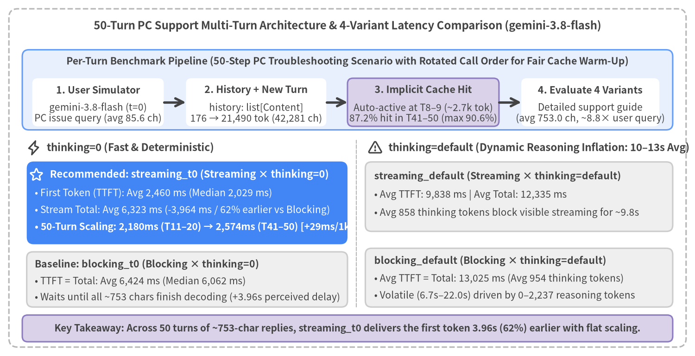
Source Code
from drawlib.canvas import save, setup
from drawlib.icons import phosphor
from drawlib.lines import line
from drawlib.shapes import rectangle
from drawlib.styles import Styles
from drawlib.text import text
setup(width=156, height=80, dpi=150)
# Outer structural frame
rectangle((78, 40), width=152, height=76, style=Styles.MutedDashed.patch(shape_r=2.0))
text(
(78, 74.2),
"50-Turn PC Support Multi-Turn Architecture & 4-Variant Latency Comparison (gemini-3.8-flash)",
style=Styles.DarkBold.patch(text_size=11.5),
)
# Top pipeline band: 50-Turn Evaluation Loop
rectangle((78, 59.8), width=146, height=18.0, style=Styles.PrimaryNeutral.patch(shape_r=1.5))
text(
(78, 66.2),
"Per-Turn Benchmark Pipeline (50-Step PC Troubleshooting Scenario with Rotated Call Order for Fair Cache Warm-Up)",
style=Styles.DarkBold.patch(text_size=10.2),
)
loop_steps = [
(22.0, 29.5, "1. User Simulator", "gemini-3.8-flash (t=0)\nPC issue query (avg 85.6 ch)", Styles.WhiteFlat),
(57.5, 31.5, "2. History + New Turn", "history: list[Content]\n176 → 21,490 tok (42,281 ch)", Styles.WhiteFlat),
(95.0, 34.0, "3. Implicit Cache Hit", "Auto-active at T8–9 (~2.7k tok)\n87.2% hit in T41–50 (max 90.6%)", Styles.SecondaryNeutral),
(132.5, 31.0, "4. Evaluate 4 Variants", "Detailed support guide\n(avg 753.0 ch, ~8.8× user query)", Styles.WhiteFlat),
]
for cx, w, st_top, st_bot, box_st in loop_steps:
rectangle((cx, 57.0), width=w, height=10.8, style=box_st.patch(shape_r=1.2, line_width=0.8))
text((cx, 59.8), st_top, style=Styles.DarkBold.patch(text_size=10.2))
text((cx, 54.6), st_bot, style=Styles.Dark.patch(text_size=10.0))
line((36.8, 57.0), (41.7, 57.0), arrow_head="->", style=Styles.DarkBold)
line((73.3, 57.0), (78.0, 57.0), arrow_head="->", style=Styles.DarkBold)
line((112.0, 57.0), (117.0, 57.0), arrow_head="->", style=Styles.DarkBold)
# Left Column: thinking=0 (Fast & Deterministic)
phosphor.lightning((7.5, 46.8), width=3.4, style=Styles.DarkBold)
text(
(10.5, 46.8),
"thinking=0 (Fast & Deterministic)",
style=Styles.DarkBold.patch(text_size=10.8, halign="left"),
)
# Focal Card: streaming_t0
rectangle((42.0, 34.4), width=72.0, height=18.6, style=Styles.PrimaryFlat.patch(shape_r=1.6))
phosphor.star((8.2, 40.8), width=3.2, style=Styles.WhiteBold)
text(
(11.2, 40.8),
"Recommended: streaming_t0 (Streaming × thinking=0)",
style=Styles.WhiteBold.patch(text_size=10.5, halign="left"),
)
text(
(7.8, 36.6),
"• First Token (TTFT): Avg 2,460 ms (Median 2,029 ms)",
style=Styles.White.patch(text_size=10.0, halign="left"),
)
text(
(7.8, 32.8),
"• Stream Total: Avg 6,323 ms (-3,964 ms / 62% earlier vs Blocking)",
style=Styles.White.patch(text_size=10.0, halign="left"),
)
text(
(7.8, 29.0),
"• 50-Turn Scaling: 2,180ms (T11–20) → 2,574ms (T41–50) [+29ms/1k]",
style=Styles.WhiteBold.patch(text_size=10.0, halign="left"),
)
# Secondary Card: blocking_t0
rectangle((42.0, 17.2), width=72.0, height=12.4, style=Styles.Neutral.patch(shape_r=1.4))
text(
(7.8, 20.6),
"Baseline: blocking_t0 (Blocking × thinking=0)",
style=Styles.DarkBold.patch(text_size=10.2, halign="left"),
)
text(
(7.8, 16.8),
"• TTFT = Total: Avg 6,424 ms (Median 6,062 ms)",
style=Styles.Dark.patch(text_size=10.0, halign="left"),
)
text(
(7.8, 13.2),
"• Waits until all ~753 chars finish decoding (+3.96s perceived delay)",
style=Styles.Dark.patch(text_size=10.0, halign="left"),
)
# Vertical divider
line((80.0, 11.0), (80.0, 48.5), style=Styles.MutedDashed.patch(line_width=1.0))
# Right Column: thinking=default (Dynamic Thinking Inflation)
phosphor.warning((84.2, 46.8), width=3.4, style=Styles.DarkBold)
text(
(87.2, 46.8),
"thinking=default (Dynamic Reasoning Inflation: 10–13s Avg)",
style=Styles.DarkBold.patch(text_size=10.8, halign="left"),
)
# Card: streaming_default
rectangle((116.5, 35.8), width=69.0, height=15.6, style=Styles.Neutral.patch(shape_r=1.4))
text(
(84.0, 40.4),
"streaming_default (Streaming × thinking=default)",
style=Styles.DarkBold.patch(text_size=10.2, halign="left"),
)
text(
(84.0, 36.2),
"• Avg TTFT: 9,838 ms | Avg Total: 12,335 ms",
style=Styles.Dark.patch(text_size=10.0, halign="left"),
)
text(
(84.0, 32.2),
"• Avg 858 thinking tokens block visible streaming for ~9.8s",
style=Styles.Dark.patch(text_size=10.0, halign="left"),
)
# Card: blocking_default
rectangle((116.5, 17.6), width=69.0, height=13.2, style=Styles.Neutral.patch(shape_r=1.4))
text(
(84.0, 21.4),
"blocking_default (Blocking × thinking=default)",
style=Styles.DarkBold.patch(text_size=10.2, halign="left"),
)
text(
(84.0, 17.4),
"• Avg TTFT = Total: 13,025 ms (Avg 954 thinking tokens)",
style=Styles.Dark.patch(text_size=10.0, halign="left"),
)
text(
(84.0, 13.6),
"• Volatile (6.7s–22.0s) driven by 0–2,237 reasoning tokens",
style=Styles.Dark.patch(text_size=10.0, halign="left"),
)
# Bottom architectural insight banner
rectangle((78.0, 6.2), width=146.0, height=6.0, style=Styles.SecondaryNeutral.patch(shape_r=1.2))
text(
(78.0, 6.2),
"Key Takeaway: Across 50 turns of ~753-char replies, streaming_t0 delivers the first token 3.96s (62%) earlier with flat scaling.",
style=Styles.DarkBold.patch(text_size=10.0),
)
save()
5.1 50-Turn PC Support Benchmark Architecture & Methodology
1. Multi-Turn History Accumulation in google-genai
Because the Gemini API is stateless across individual HTTP/gRPC requests, multi-turn chat in google-genai requires the application to maintain an ordered conversation list history: list[types.Content] (alternating role="user" and role="model" entries) and send the entire accumulated history plus the new user message on every turn (src/gemini_evaluation/llm_call.py):
from google import genai
from google.genai import types
client = genai.Client(api_key=GEMINI_KEY)
# Append the current turn's user message to the accumulated history: list[types.Content]
contents: list[types.Content] = [
*history,
types.Content(role="user", parts=[types.Part.from_text(text=user_prompt)]),
]
response_stream = await client.aio.models.generate_content_stream(
model="gemini-3.8-flash",
contents=contents,
config=types.GenerateContentConfig(
system_instruction=AGENT_SYSTEM_INSTRUCTION,
thinking_config=types.ThinkingConfig(thinking_budget=0),
temperature=0.2,
),
)
In this architecture, prompt_token_count grows monotonically with every turn. To evaluate how this growth impacts real-world latency, our 50-turn benchmark (src/gemini_evaluation/benchmark_multiturn_chat.py) implements an asymmetric two-agent simulation of a customer and a PC technical support specialist troubleshooting an unresponsive PC:
- User Simulator (
gemini-3.8-flash,thinking=0): Generates a concise70–100 charcustomer question (avg 85.6 chars) across 50 sequential PC troubleshooting stages:- Turns 1–10 (Power, Discharge & Safe Mode): Black screen on power-on, blinking AC adapter LED, 30-second power-button discharge, logo freeze, BIOS
F2SSD check, BIOS reset error0xc0000001, and booting into Windows Safe Mode. - Turns 11–20 (Data Backup & Software/Driver Isolation): Backing up work documents to USB in Safe Mode, uninstalling recent Windows Updates, rolling back a yellow-bang display driver in Device Manager, running
sfc /scannow/DISMandchkdsk, isolating post-login freezes via Task Manager andmsconfigclean boot, thermal check, and Windows Memory Diagnostic. - Turns 21–30 (Storage Health, System Restore & USB Recovery Media): Checking SSD S.M.A.R.T. health, Event Viewer
Kernel-Power 41logs, disabling Fast Startup, PCIe link power management, BIOS/chipset updates,MEMORY_MANAGEMENTBSOD System Restore, Reset this PC (Keep my files), Cloud Download vs. Local Reinstall, creating a USB recovery drive on another PC, and BIOS boot order / Secure Boot configuration. - Turns 31–45 (BitLocker, Hardware Diagnostics & Repair Logistics): Locating the 48-digit BitLocker recovery key on a smartphone, running built-in hardware Diagnostics (detecting a memory module error code), verifying 1-year standard warranty vs. accidental damage coverage by serial number, pickup repair packaging, AC adapter inclusion rules, SSD data wipe consent, paid data recovery options, loaner/rental PC availability, on-site same-day repair eligibility, out-of-warranty cancellation fees, and trade-in replacement discounts.
- Turns 46–50 (Post-Repair Verification & Preventive Backup): Post-repair inspection checklist and warranty period, malware scanning before restoring USB backups, automated system image backups to external SSD, OneDrive cloud folder sync, and 3 daily maintenance habits.
- Turns 1–10 (Power, Discharge & Safe Mode): Black screen on power-on, blinking AC adapter LED, 30-second power-button discharge, logo freeze, BIOS
- PC Support Agent (
gemini-3.8-flash): Reads the accumulatedhistoryand generates a comprehensive diagnostic and step-by-step response (avg 753.0 chars, ~8.8× longer than the user query) covering troubleshooting steps, decision criteria, and safety precautions. - 4-Variant Evaluation with Rotated Call Order (
rot = (turn - 1) % 4): Across all 50 turns (176 → 21,490 prompt_tokens,42,281 cumulative chars), we evaluate 4 variants on the exact samehistory, rotating execution order to eliminate cache-warmup bias:
| Variant Key | SDK Method | ThinkingConfig |
Avg TTFT (Median) |
Avg Total |
Avg Thinking Tokens | Architectural Role |
|---|---|---|---|---|---|---|
streaming_t0 |
generate_content_stream |
thinking_budget=0 |
2,460 ms (2,029 ms) |
6,323 ms |
19 tok (T2–50: 0) |
Recommended: Delivers first token 3,964 ms (3.96s / 62%) earlier every turn |
blocking_t0 |
generate_content |
thinking_budget=0 |
6,424 ms (6,062 ms) |
6,424 ms |
0 tok |
Waits for full ~753-char completion (TTFT = Total) |
streaming_default |
generate_content_stream |
Default (dynamic) | 9,838 ms (10,500 ms) |
12,335 ms |
858 tok |
Internal reasoning stalls first visible token for ~9.8s |
blocking_default |
generate_content |
Default (dynamic) | 13,025 ms (12,548 ms) |
13,025 ms |
954 tok |
Waits ~13.0s for reasoning + full text generation |
5.2 Input Token Growth & Automatic Implicit Context Caching (cached_content_token_count)
As each (user, model) message pair is appended to history, prompt_token_count grows linearly at ~+435 tokens/turn (176 tokens at Turn 1 → 2,686 tokens at Turn 8 → 10,060 tokens at Turn 25 → 21,490 tokens at Turn 50).
Our key empirical finding is that once input context reaches ~2,686–3,045 tokens at Turns 8–9, Gemini 3.8 Flash's automatic Implicit Context Caching (usage_metadata.cached_content_token_count) activates without any explicit cache API calls, advancing every turn and reaching an 87.2% average hit rate in Turns 41–50 (88.4% on streaming_t0 and 90.6% peak on blocking_t0 at Turn 50: 19,480 / 21,490 tokens cached).
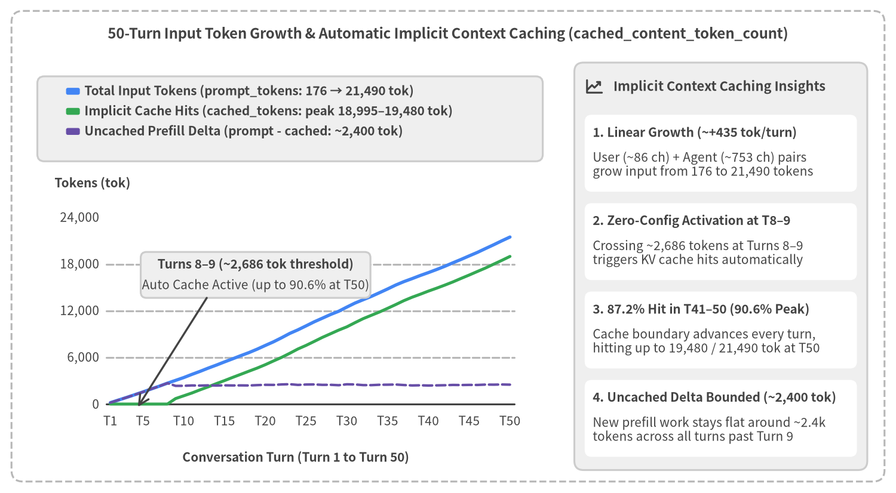
Source Code
from drawlib.canvas import save, setup
from drawlib.charts.line import LineChart
from drawlib.icons import phosphor
from drawlib.lines import line
from drawlib.shapes import rectangle
from drawlib.styles import Styles
from drawlib.text import text
from drawlib.utils import load_multiturn_turns
setup(width=156, height=86, dpi=150)
# Outer structural frame
rectangle((78.0, 43.0), width=152.0, height=82.0, style=Styles.MutedDashed.patch(shape_r=2.0))
text(
(78.0, 80.0),
"50-Turn Input Token Growth & Automatic Implicit Context Caching (cached_content_token_count)",
style=Styles.DarkBold.patch(text_size=11.5),
)
# Load 50-turn token & implicit cache metrics dynamically from benchmark JSONL
turns = load_multiturn_turns()
categories = [
f"T{t}" if t in {1, 5, 10, 15, 20, 25, 30, 35, 40, 45, 50} else ""
for t in range(1, 51)
]
prompt_vals = [float(t["variants"]["streaming_t0"]["prompt_tokens"]) for t in turns]
cached_vals = [float(t["variants"]["streaming_t0"]["cached_tokens"]) for t in turns]
uncached_vals = [p - c for p, c in zip(prompt_vals, cached_vals)]
# Left Card: LineChart container
rectangle(
(50.5, 39.5),
width=93.0,
height=71.0,
style=Styles.WhiteFlat.patch(shape_r=1.6, line_width=0.9),
)
# Legend backdrop band at top of left card
rectangle((50.5, 65.2), width=88.0, height=14.8, style=Styles.Neutral.patch(shape_r=1.2))
chart = LineChart(
axis_line_style=Styles.Dark,
categories=categories,
width=84.0,
height=42.5,
smooth=False,
show_points=False,
axis_text_style=Styles.Dark.patch(text_size=10.0),
grid_style=Styles.MutedDashed,
)
chart.add_series(
"Total Input Tokens (prompt_tokens: 176 → 21,490 tok)",
prompt_vals,
style=Styles.PrimaryFlat,
line_width=2.6,
point_shape="none",
)
chart.add_series(
"Implicit Cache Hits (cached_tokens: peak 18,995–19,480 tok)",
cached_vals,
style=Styles.SuccessFlat,
line_width=2.4,
point_shape="none",
)
chart.add_series(
"Uncached Prefill Delta (prompt - cached: ~2,400 tok)",
uncached_vals,
style=Styles.SecondaryFlat,
line_width=2.0,
line_style="dashed",
point_shape="none",
)
chart.configure_y_axis(
min_value=0.0,
max_value=24000.0,
tick_step=6000.0,
format="{:,.0f}",
)
chart.draw(xy=(8.5, 9.5))
chart.draw_legend(
xy=(11.5, 70.0),
text_style=Styles.DarkBold.patch(text_size=10.0),
orientation="vertical",
item_gap=1.3,
)
# Axis labels
text((9.5, 54.0), "Tokens (tok)", style=Styles.DarkBold.patch(text_size=10.0, halign="left"))
text((51.5, 6.2), "Conversation Turn (Turn 1 to Turn 50)", style=Styles.DarkBold.patch(text_size=10.0))
# Callout annotation inside chart pointing to Turn 8-9 cache activation
rectangle((44.5, 38.0), width=40.0, height=8.0, style=Styles.Neutral.patch(shape_r=1.0))
text(
(44.5, 39.8),
"Turns 8–9 (~2,686 tok threshold)",
style=Styles.DarkBold.patch(text_size=10.0),
)
text(
(44.5, 36.2),
"Auto Cache Active (up to 90.6% at T50)",
style=Styles.Dark.patch(text_size=10.0),
)
line((36.0, 34.0), (24.0, 15.0), arrow_head="->", style=Styles.DarkBold.patch(line_width=1.6))
# Right Panel: Neutral Summary Card Panel
rectangle((125.5, 39.5), width=51.0, height=71.0, style=Styles.Neutral.patch(shape_r=1.6))
phosphor.chart_line_up((103.5, 70.8), width=3.4, style=Styles.DarkBold)
text(
(106.8, 70.8),
"Implicit Context Caching Insights",
style=Styles.DarkBold.patch(text_size=10.5, halign="left"),
)
summary_cards = [
(
59.2,
"1. Linear Growth (~+435 tok/turn)",
"User (~86 ch) + Agent (~753 ch) pairs\ngrow input from 176 to 21,490 tokens",
),
(
43.8,
"2. Zero-Config Activation at T8–9",
"Crossing ~2,686 tokens at Turns 8–9\ntriggers KV cache hits automatically",
),
(
28.4,
"3. 87.2% Hit in T41–50 (90.6% Peak)",
"Cache boundary advances every turn,\nhitting up to 19,480 / 21,490 tok at T50",
),
(
13.0,
"4. Uncached Delta Bounded (~2,400 tok)",
"New prefill work stays flat around ~2.4k\ntokens across all turns past Turn 9",
),
]
for cy, hdr, body in summary_cards:
rectangle((125.5, cy), width=47.4, height=13.4, style=Styles.WhiteFlat.patch(shape_r=1.2, line_width=0.7))
text((103.2, cy + 3.6), hdr, style=Styles.DarkBold.patch(text_size=10.0, halign="left"))
text((103.2, cy - 2.0), body, style=Styles.Dark.patch(text_size=10.0, halign="left"))
save()
How Automatic Implicit Context Caching Works Across 50 Turns
- Zero-Configuration Activation at Turns 8–9 (
~2,686–3,045 Tokens): During Turns 1–7 (176–2,298 prompt_tokens),cached_content_token_countremains0. Once the accumulated prefix reaches Turn 8 (2,686 tokens) and Turn 9 (3,045 tokens), Gemini 3.8 Flash automatically caches the shared history prefix (703–1,060 cached tokens). - Continuous Per-Turn Prefix Expansion:
From Turn 9 onward, as conversation history grows, the cached prefix boundary advances continuously on every turn: Turn 10 (
1,061 tok) → Turn 20 (5,064 tok) → Turn 30 (9,935 tok) → Turn 40 (14,533 tok) → Turn 50 (18,995 tok[88.4%] onstreaming_t0, and19,480 tok[90.6%] onblocking_t0). Across Turns 41–50, the average cache hit rate reaches87.2%(streaming_t0). - Bounded Uncached Prefill Delta (
~2,400 Tokens): As shown by the dashed purple line in Figure 5-2, the uncached token delta (prompt_tokens - cached_tokens) requiring fresh KV-cache prefill computation on each turn remains flat around~2,340–2,540 tokens(~1,980–2,010 tokensonblocking_t0) from Turn 9 through Turn 50.
5.3 50-Turn Latency Scaling (+29 ms / 1k tokens with thinking=0)
Because Implicit Context Caching reuses the KV cache for 85–90%+ of historical tokens in the second half of the dialogue, streaming_t0 TTFT increases by only +394 ms between Turns 11–20 (2,180 ms avg) and Turns 41–50 (2,574 ms avg) despite a +13,700 token increase in prompt size. This represents a flat linear scaling slope of +29 ms per 1,000 input tokens, keeping median time-to-first-token at 2,029 ms across the 50-turn troubleshooting session.
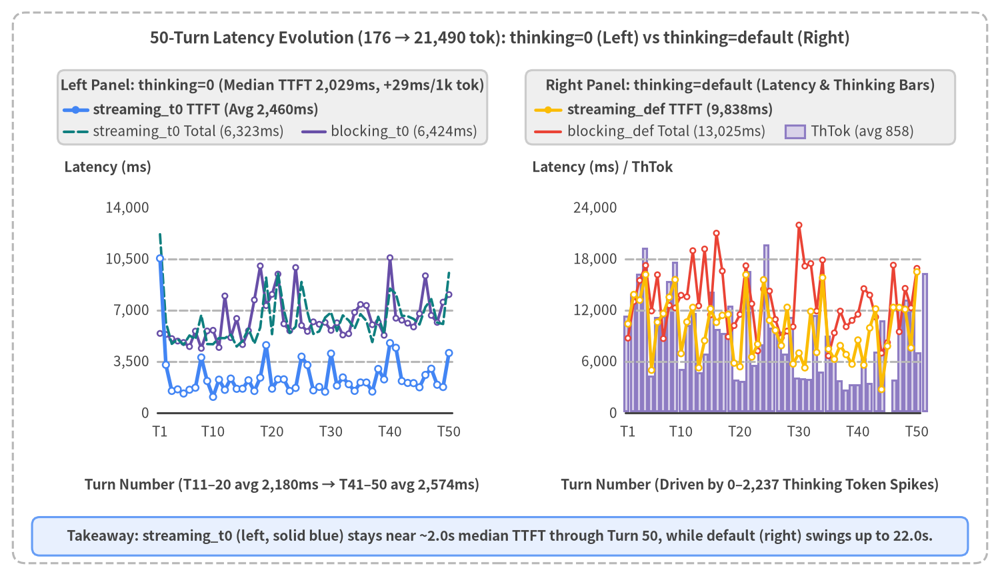
Source Code
from drawlib.canvas import save, setup
from drawlib.charts.line import LineChart
from drawlib.lines import line
from drawlib.shapes import circle, rectangle
from drawlib.styles import Styles
from drawlib.text import text
from drawlib.utils import load_multiturn_turns
setup(width=156, height=90, dpi=150)
# Outer structural frame
rectangle((78.0, 45.0), width=152.0, height=86.0, style=Styles.MutedDashed.patch(shape_r=2.0))
text(
(78.0, 84.0),
"50-Turn Latency Evolution (176 → 21,490 tok): thinking=0 (Left) vs thinking=default (Right)",
style=Styles.DarkBold.patch(text_size=11.5),
)
turns = load_multiturn_turns()
labeled_turns = {1, 10, 20, 30, 40, 50}
categories = [f"T{t['turn']}" if int(t["turn"]) in labeled_turns else "" for t in turns]
s0_ttft = [float(t["variants"]["streaming_t0"]["ttft_ms"]) for t in turns]
s0_total = [float(t["variants"]["streaming_t0"]["total_ms"]) for t in turns]
b0_total = [float(t["variants"]["blocking_t0"]["total_ms"]) for t in turns]
sd_ttft = [float(t["variants"]["streaming_default"]["ttft_ms"]) for t in turns]
bd_total = [float(t["variants"]["blocking_default"]["total_ms"]) for t in turns]
sd_th_tok = [float(t["variants"]["streaming_default"]["thoughts_tokens"]) for t in turns]
# =========================================================================
# Left Panel: thinking=0 (Flat +29 ms / 1k tok scaling)
# =========================================================================
rectangle((42.5, 45.5), width=71.0, height=69.0, style=Styles.WhiteFlat.patch(shape_r=1.5, line_width=0.8))
rectangle((42.5, 73.2), width=67.0, height=11.6, style=Styles.Neutral.patch(shape_r=1.1))
text(
(42.5, 76.6),
"Left Panel: thinking=0 (Median TTFT 2,029ms, +29ms/1k tok)",
style=Styles.DarkBold.patch(text_size=10.2),
)
# Legend for Left Panel
line((10.0, 72.8), (13.6, 72.8), style=Styles.PrimaryBold.patch(line_width=2.6))
circle((11.8, 72.8), radius=0.6, style=Styles.PrimaryFlat)
text((14.5, 72.8), "streaming_t0 TTFT (Avg 2,460ms)", style=Styles.DarkBold.patch(text_size=10.0, halign="left"))
line((10.0, 69.4), (13.6, 69.4), style=Styles.TealDashed.patch(line_width=1.9))
text((14.5, 69.4), "streaming_t0 Total (6,323ms)", style=Styles.Dark.patch(text_size=10.0, halign="left"))
line((47.2, 69.4), (50.8, 69.4), style=Styles.SecondaryBold.patch(line_width=2.1))
text((51.6, 69.4), "blocking_t0 (6,424ms)", style=Styles.Dark.patch(text_size=10.0, halign="left"))
chart_left = LineChart(
axis_line_style=Styles.Dark,
axis_text_style=Styles.Dark.patch(text_size=10.0),
grid_style=Styles.MutedDashed,
categories=categories,
width=59.0,
height=42.0,
show_points=True,
point_shape="circle",
point_size=0.45,
)
chart_left.configure_x_axis(show_grid=False)
chart_left.configure_y_axis(
min_value=0,
max_value=14000,
tick_step=3500,
format="{:,.0f}",
)
chart_left.add_series(
name="blocking_t0 Total",
values=b0_total,
style=Styles.SecondaryFlat,
line_width=2.0,
point_size=0.4,
)
chart_left.add_series(
name="streaming_t0 Total",
values=s0_total,
style=Styles.TealFlat,
line_width=1.8,
line_style="dashed",
point_shape="none",
)
chart_left.add_series(
name="streaming_t0 TTFT",
values=s0_ttft,
style=Styles.PrimaryFlat,
line_width=2.6,
point_size=0.5,
)
chart_left.draw(xy=(14.5, 19.5))
text((10.0, 63.8), "Latency (ms)", style=Styles.DarkBold.patch(text_size=10.0, halign="left"))
text((44.0, 14.2), "Turn Number (T11–20 avg 2,180ms → T41–50 avg 2,574ms)", style=Styles.DarkBold.patch(text_size=10.0))
# =========================================================================
# Right Panel: thinking=default (Latency + Thinking Token Bars)
# =========================================================================
rectangle((115.5, 45.5), width=71.0, height=69.0, style=Styles.WhiteFlat.patch(shape_r=1.5, line_width=0.8))
rectangle((115.5, 73.2), width=67.0, height=11.6, style=Styles.Neutral.patch(shape_r=1.1))
text(
(115.5, 76.6),
"Right Panel: thinking=default (Latency & Thinking Bars)",
style=Styles.DarkBold.patch(text_size=10.2),
)
# Legend for Right Panel
line((83.5, 72.8), (87.5, 72.8), style=Styles.WarningBold.patch(line_width=2.2))
circle((85.5, 72.8), radius=0.55, style=Styles.WarningFlat)
text((88.5, 72.8), "streaming_def TTFT (9,838ms)", style=Styles.DarkBold.patch(text_size=10.0, halign="left"))
line((83.5, 69.4), (87.5, 69.4), style=Styles.DangerBold.patch(line_width=2.0))
text((88.5, 69.4), "blocking_def Total (13,025ms)", style=Styles.Dark.patch(text_size=10.0, halign="left"))
rectangle((124.0, 69.4), width=3.0, height=2.0, style=Styles.SecondaryNeutral.patch(line_width=0.6))
text((126.5, 69.4), "ThTok (avg 858)", style=Styles.Dark.patch(text_size=10.0, halign="left"))
# Draw Thinking Token vertical bars strictly inside the inner plot area (x: 97.7..144.2, y0: 25.8)
rx0, ry0, rpw, rph = 87.5, 19.5, 59.0, 42.0
inner_x0, inner_x1, inner_y0, inner_h = 97.7, 144.2, 25.8, 32.5
for idx, th_val in enumerate(sd_th_tok):
bx = inner_x0 + (idx / max(len(sd_th_tok) - 1, 1)) * (inner_x1 - inner_x0)
bh = min(th_val / 2400.0, 1.0) * inner_h
if bh > 0.2:
rectangle(
(bx, inner_y0 + bh / 2.0),
width=0.62,
height=bh,
style=Styles.SecondaryNeutral.patch(line_width=0.3, shape_r=0),
)
chart_right = LineChart(
axis_line_style=Styles.Dark,
axis_text_style=Styles.Dark.patch(text_size=10.0),
grid_style=Styles.MutedDashed,
categories=categories,
width=rpw,
height=rph,
show_points=True,
point_shape="circle",
point_size=0.45,
)
chart_right.configure_x_axis(show_grid=False)
chart_right.configure_y_axis(
min_value=0,
max_value=24000,
tick_step=6000,
format="{:,.0f}",
)
chart_right.add_series(
name="blocking_default Total",
values=bd_total,
style=Styles.DangerFlat,
line_width=1.8,
point_size=0.4,
)
chart_right.add_series(
name="streaming_default TTFT",
values=sd_ttft,
style=Styles.WarningFlat,
line_width=2.2,
point_size=0.45,
)
chart_right.draw(xy=(rx0, ry0))
text((83.0, 63.8), "Latency (ms) / ThTok", style=Styles.DarkBold.patch(text_size=10.0, halign="left"))
text((117.0, 14.2), "Turn Number (Driven by 0–2,237 Thinking Token Spikes)", style=Styles.DarkBold.patch(text_size=10.0))
# Bottom callout bar
rectangle((78.0, 6.2), width=146.0, height=6.0, style=Styles.PrimaryNeutral.patch(shape_r=1.2))
text(
(78.0, 6.2),
"Takeaway: streaming_t0 (left, solid blue) stays near ~2.0s median TTFT through Turn 50, while default (right) swings up to 22.0s.",
style=Styles.DarkBold.patch(text_size=10.0),
)
save()
Key Architectural Observations from Figure 5-3
- Left Panel (
thinking=0): Stable~2.0sMedian First-Token Latency Across 50 Turns:- The solid blue curve (
streaming_t0 TTFT, avg2,460 ms, Turns 2–50 avg2,295 ms, median2,029 ms) remains tightly bounded across the conversation, running consistently3,964 ms(3.96s/62%) below the solid purple curve (blocking_t0 Total=TTFT, avg6,424 ms). - Meanwhile, the dashed teal curve (
streaming_t0 Total, avg6,323 ms) tracksblocking_t0(6,424 ms) almost identically, proving that streaming introduces zero completion-time penalty.
- The solid blue curve (
- Right Panel (
thinking=default): Volatility Dominated by Thinking Token Count:- Under
thinking=default, the model dynamically generates an average of858–954thinking tokens per turn (shaded vertical bars, range0–2,237 tokens), causing bothstreaming_defaultTTFT (avg9,838 ms) andblocking_defaultTotal (avg13,025 ms) to fluctuate wildly up to22.0sregardless of turn number.
- Under
5.4 Thinking Token Volatility & 2D Trajectory Snapshots (Turn 1 vs Turn 25 vs Turn 50)
To prove what drives latency under thinking=default and visualize how chunks arrive across early (Turn 1), mid (Turn 25), and late (Turn 50) conversation turns, Figure 5-4 pairs a scatter plot of thoughts_tokens vs total_ms across all 100 thinking=default executions (50 turns × 2 modes) on the left with a 3-Turn Trajectory Overlay (Turn 1, Turn 25, Turn 50 from load_multiturn_trajectory()) on the right.
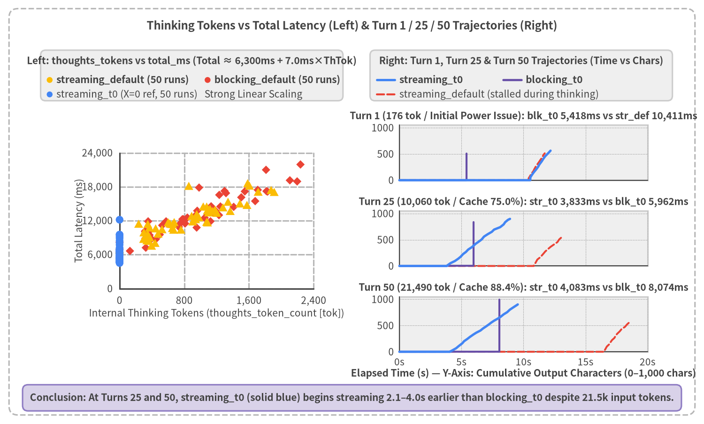
Source Code
from drawlib.canvas import save, setup
from drawlib.charts.scatter import ScatterChart
from drawlib.lines import line, lines
from drawlib.shapes import circle, rectangle
from drawlib.styles import Styles
from drawlib.text import text
from drawlib.utils import load_multiturn_trajectory, load_multiturn_turns
setup(width=156, height=94, dpi=150)
# Outer structural frame
rectangle((78.0, 47.0), width=152.0, height=90.0, style=Styles.MutedDashed.patch(shape_r=2.0))
text(
(78.0, 88.2),
"Thinking Tokens vs Total Latency (Left) & Turn 1 / 25 / 50 Trajectories (Right)",
style=Styles.DarkBold.patch(text_size=11.5),
)
# =========================================================================
# Left Panel: Scatter plot of thoughts_tokens vs total_ms (100 default runs + t=0 ref)
# =========================================================================
rectangle((42.5, 47.5), width=71.0, height=73.0, style=Styles.WhiteFlat.patch(shape_r=1.5, line_width=0.8))
rectangle((42.5, 77.2), width=67.0, height=11.2, style=Styles.Neutral.patch(shape_r=1.1))
text(
(42.5, 80.4),
"Left: thoughts_tokens vs total_ms (Total ≈ 6,300ms + 7.0ms×ThTok)",
style=Styles.DarkBold.patch(text_size=10.0),
)
pts_s_def: list[tuple[float, float]] = []
pts_b_def: list[tuple[float, float]] = []
pts_s_t0: list[tuple[float, float]] = []
for t_rec in load_multiturn_turns():
v = t_rec["variants"]
pts_s_def.append((float(v["streaming_default"]["thoughts_tokens"]), float(v["streaming_default"]["total_ms"])))
pts_b_def.append((float(v["blocking_default"]["thoughts_tokens"]), float(v["blocking_default"]["total_ms"])))
pts_s_t0.append((0.0, float(v["streaming_t0"]["total_ms"])))
# Compact legend inside Left Panel header
circle((11.0, 76.2), radius=0.65, style=Styles.WarningFlat)
text((12.5, 76.2), "streaming_default (50 runs)", style=Styles.DarkBold.patch(text_size=10.0, halign="left"))
circle((46.0, 76.2), radius=0.65, style=Styles.DangerFlat)
text((47.5, 76.2), "blocking_default (50 runs)", style=Styles.DarkBold.patch(text_size=10.0, halign="left"))
circle((11.0, 73.0), radius=0.65, style=Styles.PrimaryFlat)
text((12.5, 73.0), "streaming_t0 (X=0 ref, 50 runs) Strong Linear Scaling", style=Styles.Dark.patch(text_size=10.0, halign="left"))
scatter = ScatterChart(
axis_line_style=Styles.Dark,
axis_text_style=Styles.Dark.patch(text_size=10.0),
grid_style=Styles.MutedDashed,
width=63.0,
height=46.0,
default_radius=0.85,
)
scatter.configure_x_axis(
label="Internal Thinking Tokens (thoughts_token_count [tok])",
min_value=0,
max_value=2400,
tick_step=800,
format="{:,.0f}",
)
scatter.configure_y_axis(
label="Total Latency (ms)",
min_value=0,
max_value=24000,
tick_step=6000,
format="{:,.0f}",
)
scatter.add_series("blocking_default", pts_b_def, style=Styles.DangerFlat, shape="rhombus", radius=0.85)
scatter.add_series("streaming_default", pts_s_def, style=Styles.WarningFlat, shape="triangle", radius=0.9)
scatter.add_series("streaming_t0", pts_s_t0, style=Styles.PrimaryFlat, shape="circle", radius=0.85)
scatter.draw(xy=(11.5, 18.0))
# =========================================================================
# Right Panel: 3-Turn Trajectory Overlay (Turn 1, Turn 25, Turn 50)
# =========================================================================
rectangle((115.5, 47.5), width=71.0, height=73.0, style=Styles.WhiteFlat.patch(shape_r=1.5, line_width=0.8))
rectangle((115.5, 77.2), width=67.0, height=11.2, style=Styles.Neutral.patch(shape_r=1.1))
text(
(115.5, 80.4),
"Right: Turn 1, Turn 25 & Turn 50 Trajectories (Time vs Chars)",
style=Styles.DarkBold.patch(text_size=10.0),
)
# Legend for Right Panel trajectories
line((83.5, 76.2), (87.5, 76.2), style=Styles.PrimaryBold.patch(line_width=2.4))
text((88.5, 76.2), "streaming_t0", style=Styles.DarkBold.patch(text_size=10.0, halign="left"))
line((111.5, 76.2), (115.5, 76.2), style=Styles.SecondaryBold.patch(line_width=2.2))
text((116.5, 76.2), "blocking_t0", style=Styles.DarkBold.patch(text_size=10.0, halign="left"))
line((83.5, 73.0), (87.5, 73.0), style=Styles.DangerDashed.patch(line_width=2.0))
text((88.5, 73.0), "streaming_default (stalled during thinking)", style=Styles.Dark.patch(text_size=10.0, halign="left"))
sub_panels = [
(1, 54.0, "Turn 1 (176 tok / Initial Power Issue): blk_t0 5,418ms vs str_def 10,411ms"),
(25, 35.0, "Turn 25 (10,060 tok / Cache 75.0%): str_t0 3,833ms vs blk_t0 5,962ms"),
(50, 16.0, "Turn 50 (21,490 tok / Cache 88.4%): str_t0 4,083ms vs blk_t0 8,074ms"),
]
max_t = 20000.0
max_c = 1050.0
pw = 55.0
ph = 12.2
px0 = 88.5
for t_num, py0, sub_title in sub_panels:
text((px0 + pw / 2, py0 + ph + 2.0), sub_title, style=Styles.DarkBold.patch(text_size=10.0))
rectangle((px0 + pw / 2, py0 + ph / 2), width=pw, height=ph, style=Styles.Neutral.patch(line_width=0.5, shape_r=0))
def to_x(ms: float) -> float:
return px0 + min(max(ms, 0.0), max_t) / max_t * pw
def to_y(ch: float, base_y: float = py0) -> float:
return base_y + min(max(ch, 0.0), max_c) / max_c * ph
for xt in (0, 5000, 10000, 15000, 20000):
tx = to_x(float(xt))
line((tx, py0), (tx, py0 + ph), style=Styles.MutedDashed.patch(line_width=0.5))
if t_num == 50:
text((tx, py0 - 2.2), f"{xt // 1000}s", style=Styles.Dark.patch(text_size=10.0))
for yt in (0, 500, 1000):
ty = to_y(float(yt))
line((px0, ty), (px0 + pw, ty), style=Styles.MutedDashed.patch(line_width=0.5))
text((px0 - 1.2, ty), f"{yt}", style=Styles.Dark.patch(text_size=10.0, halign="right"))
line((px0, py0), (px0 + pw, py0), style=Styles.Dark.patch(line_width=1.0))
line((px0, py0), (px0, py0 + ph), style=Styles.Dark.patch(line_width=1.0))
for v_key, st_line in (
("streaming_default", Styles.DangerDashed.patch(line_width=1.9)),
("blocking_t0", Styles.SecondaryBold.patch(line_width=2.0)),
("streaming_t0", Styles.PrimaryBold.patch(line_width=2.4)),
):
tr = load_multiturn_trajectory(t_num, v_key)
gem_pts = tr["timeline_series"].get("gemini", [])
if len(gem_pts) >= 2:
coords = [(to_x(float(p["t_ms"])), to_y(float(p["chars"]))) for p in gem_pts]
lines(coords, style=st_line)
text((px0 + pw / 2, 11.2), "Elapsed Time (s) — Y-Axis: Cumulative Output Characters (0–1,000 chars)", style=Styles.DarkBold.patch(text_size=10.0))
# Bottom callout bar
rectangle((78.0, 5.8), width=146.0, height=5.8, style=Styles.SecondaryNeutral.patch(shape_r=1.2))
text(
(78.0, 5.8),
"Conclusion: At Turns 25 and 50, streaming_t0 (solid blue) begins streaming 2.1–4.0s earlier than blocking_t0 despite 21.5k input tokens.",
style=Styles.DarkBold.patch(text_size=10.0),
)
save()
Key Findings from the Scatter & Trajectory Analysis
- Left Panel:
Total ≈ 6,300 ms + 7.0 ms × ThTokGoverns Multi-Turn Latency:- Plotting all 100
thinking=defaultexecutions (50 turns × 2 modes) confirms that total completion time is governed by reasoning token count (0–2,237 tokens), not turn number (Total ≈ 6,300 ms + 7.0 ms × ThTok). - The
~6,300 msy-intercept represents the base decoding time for a~753-chardetailed technical support response, while each 1,000 thinking tokens add~7.0 secondsof pre-output delay.
- Plotting all 100
- Right Panel: 3-Turn Trajectory Snapshots (
Turn 1,Turn 25,Turn 50):- Turn 1 (
176 tok, Cache0%, Initial Unresponsive PC Query): Apart from the initial cold request,blocking_t0(solid purple) remains flat at0 charsuntil5,418 ms, andstreaming_default(dashed red) stalls at0 charsfor10,411 ms(1,087thinking tokens) before streaming. - Turn 25 (
10,060 tok, Cache7,547 tok [75.0%], BIOS/Chipset Update Guide): Even with 57× more input context,streaming_t0(solid blue) starts streaming at3,833 ms, delivering the first visible characters2,129 ms(36%) earlier thanblocking_t0(5,962 ms). - Turn 50 (
21,490 tok, Cache18,995 tok [88.4%], Preventive Maintenance Summary): At the 50th turn (122×larger context), Implicit Context Caching serves88.4–90.6%of the prompt from KV cache. As a result,streaming_t0begins streaming at4,083 ms—3,991 ms(49%) earlier thanblocking_t0(8,074 ms)—and completes the902-charreply at9,554 ms(whereasstreaming_defaultstalls for16,498 msdue to1,584thinking tokens).
- Turn 1 (
5.5 Comprehensive 10-Turn Cohort Table & Production Guidelines for Multi-Turn Chat
1. 10-Turn Cohort Summary Table (Turns 1–10 through Turns 41–50)
The table below summarizes input token growth, Implicit Context Cache hit rates, and latency across 10-turn cohorts and all 50 turns combined.
| Turn Cohort & Troubleshooting Stage | Avg prompt_tokens(Min–Max) |
Avg cached_tokens( streaming_t0 Hit Rate) |
streaming_t0TTFT / Total ( ms) |
blocking_t0TTFT = Total ( ms) |
Streaming TTFT Lead ( streaming_t0 - blocking_t0) |
streaming_defaultTTFT / Total ( ms) [Avg ThTok] |
blocking_defaultTotal ( ms) [Avg ThTok] |
|---|---|---|---|---|---|---|---|
| Turns 1–10 (Power, Discharge, BIOS, Safe Mode) |
1,768 tok( 176–3,407) |
177 tok( 10.0%, active T8–9) |
2,853 / 5,910 ms(T2–10: 2,000 ms) |
5,125 ms |
-2,272 ms (-44.3%) |
11,687 / 13,467 ms[ 1,211 tok] |
12,988 ms[ 1,099 tok] |
| Turns 11–20 (Backup, Drivers, sfc, Memory Diag) |
5,635 tok( 3,817–7,539) |
3,229 tok( 57.3%) |
2,180 / 5,586 ms |
6,742 ms |
-4,562 ms (-67.7%) |
9,357 / 11,643 ms[ 828 tok] |
14,398 ms[ 1,154 tok] |
| Turns 21–30 (SSD SMART, Restore, USB Boot Media) |
10,280 tok( 8,005–12,478) |
7,784 tok( 75.7%) |
2,361 / 6,804 ms |
6,666 ms |
-4,305 ms (-64.6%) |
9,969 / 12,658 ms[ 913 tok] |
12,731 ms[ 954 tok] |
| Turns 31–40 (BitLocker, HW Diag, Pickup Repair) |
15,007 tok( 12,995–16,915) |
12,556 tok( 83.7%) |
2,331 / 6,260 ms |
6,653 ms |
-4,322 ms (-65.0%) |
8,265 / 11,405 ms[ 517 tok] |
12,480 ms[ 802 tok] |
| Turns 41–50 (Loaner PC, On-Site, Backup & Maint) |
19,338 tok( 17,309–21,490) |
16,872 tok( 87.2%) |
2,574 / 7,054 ms |
6,935 ms |
-4,361 ms (-62.9%) |
9,910 / 12,504 ms[ 823 tok] |
12,527 ms[ 763 tok] |
| All 50 Turns | 10,406 tok( 176–21,490) |
8,124 tok( 78.1% / Peak 90.6%) |
2,460 / 6,323 ms(Median 2,029 ms) |
6,424 ms |
-3,964 ms (-61.7%) |
9,838 / 12,335 ms[ 858 tok] |
13,025 ms[ 954 tok] |
2. Production Architecture Guidelines for Multi-Turn Chat
- Preserve Strict Prefix Immutability to Maximize Implicit Context Caching:
- Gemini 3.8 Flash's Implicit Context Caching matches the exact token prefix across
system_instructionand historicalcontents: list[types.Content]. - Anti-Pattern: Injecting per-request dynamic timestamps, random request UUIDs, or mutating device telemetry JSON inside
system_instructioninvalidates the token prefix on every turn, dropping the cache hit rate to0%. - Best Practice: Keep
system_instructionstatic and treathistory: list[types.Content]as strictly append-only. Place dynamic per-turn metadata (such as current diagnostic status or retrieved knowledge-base snippets) at the end of the latest user turn message.
- Gemini 3.8 Flash's Implicit Context Caching matches the exact token prefix across
- Standardize on
Streaming × thinking=0(streaming_t0) for Conversational UX:- When technical support responses average
~753 chars, full token generation takes~6.42 secondseven withthinking=0. - Using
generate_content_streamwiththinking_budget=0delivers the first token in2,460 mson average (2,029 msmedian,3,964 ms/62%earlier than Blocking) and scales at just+29 ms per 1,000 input tokens, maintaining responsive UX through Turn 50.
- When technical support responses average
- Combine Multi-Turn Prefix Caching with the Two-Field Integrated Adaptive Router (Pattern A):
- Leaving
thinking=defaultenabled across all turns inflates average TTFT to9,838 ms. - Instead, pair
thinking=0streaming for routine troubleshooting turns with the 2-Field Integrated Pydantic Router (Pattern A) from Chapter 4 when a turn requires complex multi-step cost or transfer-time math. Because Stage 1 (thinking=0prefix check) and Stage 2 (thinking=lowparallel handoff) share the exact samesystem_instruction+historyprefix, Stage 2 automatically benefits from the warmed Implicit Context Cache.
- Leaving